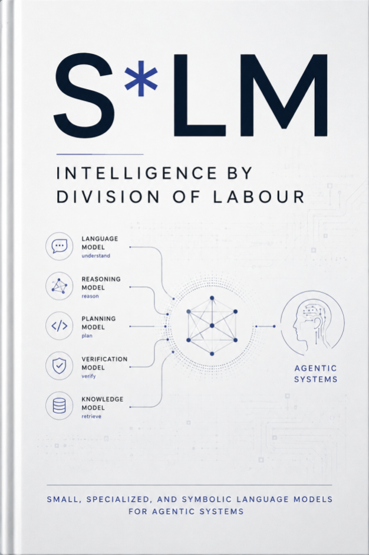

Modele lingvistice mici, specializate și simbolice pentru sisteme agentice
O analiză de sinteză, o sinteză arhitecturală și un program de cercetare
Programul ScriptaHub
Dovezi analizate până la 25 august 2026
Drepturi de autor © [2026] ScriptaHub
Toate drepturile rezervate.
Drepturile de publicare KDP sunt deținute de Outfinity SRL (Iași, România). Disponibil gratuit pe site-ul ScriptaHub (ScriptaHub.com).
Nota autorului Această lucrare a fost creată sub egida ScriptaHub, în cadrul a două programe de cercetare interconectate, unul dedicat inteligenței artificiale, iar celălalt Outfinitismului, ambele conduse de Sînică Alboaie. Pentru a explora detaliile modului în care aceste două programe se intersectează și se dezvoltă reciproc, invităm cititorii să viziteze pagina Outfinity Venture Studio la www.outfinity.ch. Deși modelele lingvistice de inteligență artificială au fost folosite pentru a sprijini generarea textului, filosofia fundamentală, structura tematică și abordarea analitică provin exclusiv din deceniile de studiu dedicat ale autorului asupra fenomenelor sociale, tehnologiilor sociale și tehnologiilor avansate autentice rezultate din diverse proiecte de cercetare europene și autofinanțate. Recent, în cadrul proiectului de cercetare ScriptaHub, am studiat în profunzime literatura generată de IA și verificarea sa automată prin abordări neurosimbolice; toate cărțile gratuite puse la dispoziția publicului fac parte din suita de lucrări pe care le folosim pentru a testa cele mai recente tehnologii ale noastre.
Narațiunea dominantă a progresului modelelor lingvistice a fost una a scării. Sistemele agentice necesită o narațiune diferită: una despre diviziunea muncii cognitive. Un agent util nu produce doar proză. El identifică ce dorește o persoană, interpretează entități și constrângeri, selectează instrumente, construiește cereri formale, regăsește și actualizează starea, verifică rezultate, gestionează autoritatea și explică ce s-a întâmplat. Aceste operații au cerințe inegale. Unele necesită cunoștințe lingvistice și despre lume ample. Altele sunt probleme repetitive de clasificare. Unele necesită calcul exact, nu text plauzibil. Unele trebuie să ruleze local din motive de latență, confidențialitate, disponibilitate sau cost. Tratarea tuturor ca un singur prompt pentru un singur model de frontieră este comodă tehnic, dar ascunde structura problemei.
Această carte numește un program de cercetare în jurul sistemelor S*LM. Asteriscul este un metacaracter: o componentă poate fi mică, specializată, simbolică sau poate combina aceste proprietăți. Termenul nu pretinde că un solver SMT sau un planificator este un model lingvistic. El desemnează o familie de sisteme în care inteligența lingvistică este descompusă între modele neuronale compacte, modele specifice sarcinii, reprezentări constrânse, motoare simbolice, software determinist și acces selectiv la modele mai generale. Întrebarea de cercetare nu este dacă modelele mici pot înlocui modelele mari în
compuse rolurile, unde incertitudinea trebuie să declanșeze escaladarea și cum poate autoritatea să rămână în afara generării probabilistice de text.
Analiza găsește dovezi puternice că modelele compacte sunt deja utile pentru operații lingvistice limitate și tot mai viabile pentru apelarea funcțiilor, rutare, extragere, reprezentări vectoriale, moderare, interacțiune pe dispozitiv și adaptare la domeniu. Familiile FunctionGemma, Phi compacte, Qwen, Gemma, Llama, Granite, SmolLM, Ministral, modelele distilate DeepSeek și cele Apple pe dispozitiv ilustrează o mișcare industrială amplă către modele mai mici, ușor de implementat, în timp ce xLAM, Hammer, APIGen și ToolACE arată că datele de utilizare a instrumentelor verificate sau sintetizate atent pot produce câștiguri disproporționate în politici înguste de acțiune. Dovezile academice pentru compoziția neuronal-simbolică sunt și ele substanțiale la nivel arhitectural: MRKL, Logic-LM, LINC, SatLM, LLM+P și LLM-Modulo separă toate interpretarea lingvistică de calculul exact sau verificabil. Totuși, dovezile nu justifică o concluzie triumfalistă. Formalizarea rămâne failibilă; modelele compacte pot fi fragile în afara domeniului antrenării; rutarea nu recunoaște adesea când modelul mic este suficient; iar sistemele multiagent adaugă frecvent erori de coordonare, nu inteligență independentă.
Judecata centrală este, așadar, condiționată. S*LM este deja un tipar ingineresc credibil pentru munca agentică repetitivă, verificabilă și cu autoritate limitată. Devine un program de cercetare mai profund când întreabă dacă munca recurentă mediată lingvistic poate fi compilată progresiv în modele, scheme, circuite, memorii și validatori revizuiți, păstrând fidelitatea semantică. Dacă această direcție reușește, produsul important nu va fi încă un chatbot mic. Va fi un mediu de execuție agentic care alocă interpretarea, raționamentul, memoria, execuția și autoritatea componentei cel mai puțin generale care poate efectua fiabil fiecare operație.
Aceasta este o analiză de sinteză și o poziție, nu un catalog de modele deghizat în teorie. Analiza literaturii prioritizează articolele originale, fișele modelelor, rapoartele tehnice oficiale, depozitele și îndrumările operaționale ale dezvoltatorilor de modele și platforme. Dovezile sunt actualizate până la 25 august 2026. Afirmațiile furnizorilor despre etaloane sunt tratate ca dovezi că o organizație investește într-o direcție, nu ca dovadă independentă că sistemul afirmat domină alternativele. Prepublicările sunt folosite când expun proiectări, date sau analize de eșec importante pentru program, dar sunt identificate ca provizorii unde este cazul.
Patru etichete guvernează argumentul. Practică stabilită se referă la capacități demonstrate repetat în software implementat sau în studii independente, precum modele compacte de reprezentare vectorială, generare JSON constrânsă, execuție externă a apelurilor de funcții și inferență locală cuantizată. Semnal convergent se referă la un tipar susținut de mai multe grupuri de cercetare sau furnizori, dar încă sensibil la proiectarea sarcinii, precum folosirea modelelor mici de acțiune în stive agentice mai mari. Ipoteză de cercetare marchează o propoziție plauzibilă, dar încă nestabilită, precum compilarea progresivă a traiectoriilor agentice recurente într-o bibliotecă de politici compacte și proceduri simbolice. Rezultat condiționat precizează ce ar putea deveni posibil dacă ipoteza rezistă unei evaluări exigente; nu este prezentat ca prognoză.
Cartea evită deliberat tabelele cu scoruri de etalon. Scorurile sunt adesea utile într-o decizie inginerească controlată, dar slabe ca principiu organizatoric al unui program de cercetare. Ele variază cu prompturile, infrastructurile de testare, schemele instrumentelor, cuantizarea, eșantionarea, hardware-ul și contaminarea datelor. Analiza întreabă în schimb ce dezvăluie un rezultat despre alocarea muncii. Un model cu un miliard de parametri care depășește un model mai mare pe o suită de apelare a funcțiilor nu dovedește că este în general mai inteligent. Dovedește că datele specifice sarcinii, contractele de ieșire și spațiile înguste de acțiune pot conta mai mult decât numărul parametrilor pentru acel rol. Invers, un model mare care conduce un etalon amplu nu dovedește că fiecare subpas de volum mare al unui agent ar trebui să-l folosească.
Domeniul este centrat pe limbaj, dar nu exclusiv textual. Vorbirea, imaginile și interfețele grafice sunt incluse acolo unde creează sau consumă intenție lingvistică. Sistemele simbolice includ logică, constrângeri, planificare, baze de date, grafuri de cunoștințe, analiză statică, execuție de programe și verificare formală. Sunt incluse deoarece schimbă ceea ce trebuie să învețe modelul neuronal și ce poate garanta sistemul. Distincția decisivă este între generarea unui candidat și acordarea autorității acelui candidat. Modelele neuronale pot propune interpretări și acțiuni. Componentele deterministe, politicile și oamenii decid dacă propunerile sunt admisibile și dacă efectele lor secundare pot fi aplicate definitiv.
| Etichetă a dovezilor | Semnificația în această carte |
|---|---|
| Practică stabilită | Demonstrată repetat în sisteme implementate sau în |
lucrări tehnice independente; rămâne condiționată de rolul și mediul numite.
| Semnal convergent | Mai multe surse academice sau industriale indică aceeași direcție, dar rezultatul rămâne sensibil la sarcină sau îi lipsește evaluarea standardizată. |
|---|---|
| Ipoteză de cercetare | O propoziție plauzibilă, testabilă, care nu este prezentată ca stabilită. |
| Rezultat condiționat | Ce ar putea deveni posibil dacă ipoteza rezistă unei |
evaluări exigente; nu o prognoză sau promisiune de produs.
| Capitolul |
|---|
| PARTEA I Poziția S*LM |
| Capitolul 1 De la scară la diviziunea muncii cognitive |
| Capitolul 2 Taxonomia S*LM: dimensiune, specializare și structură simbolică |
| Capitolul 3 Contracte, autoritate și mediul eterogen de execuție agentică |
| PARTEA II Stiva lingvistică agentică |
| Capitolul 4 Citirea cererii: intenție, rutare, ambiguitate și multilingv |
| Capitolul 5 Transformările lingvistice ca infrastructură agentică |
| Capitolul 6 De la limbaj natural la obiecte formale |
| Capitolul 7 Planificare, utilizarea instrumentelor și acțiune controlată |
| Capitolul 8 Memorie, regăsire, verificare, recuperare și escaladare |
| Capitolul 9 Sisteme multiagent fără joc de rol |
| PARTEA III Încredere, implementare și economie |
| Capitolul 10 IA de încredere prin arhitectură |
| Capitolul 11 Antrenare, implementare și economia muncii reușite |
| PARTEA IV Sinteza analizei și programul de cercetare |
| Capitolul 12 Ce semnalează de fapt mediul academic și industria |
| Capitolul 13 Programul de cercetare S*LM |
| Anexa C Componente simbolice, formale și deterministe de procesare |
| Anexa D Implementare și infrastructură agentică |
Programul începe prin înlocuirea întrebării „Cât de
mic poate fi un model general?” cu întrebarea mai utilă
următoare:
„Câtă generalitate necesită fiecare operație?”
Industria modernă a modelelor lingvistice a fost construită în jurul unui fapt empiric convingător: creșterea scării, a calității datelor și a calculului de antrenare a produs repetat modele generale mai capabile. Acest fapt rămâne important. Nu determină însă cea mai bună arhitectură pentru fiecare sistem agentic. Un agent nu este un sistem care răspunde la etaloane și are acces la butoane. Este un proces controlat care trece de la o cerere umană insuficient specificată la schimbări de stare în software, baze de date, instrumente sau organizații. Odată ce efectele secundare, costul, confidențialitatea și responsabilitatea contează, unitatea relevantă a analizei nu mai este modelul izolat. Este alocarea muncii în întregul sistem.
Să considerăm o cerere obișnuită dintr-o întreprindere: „Găsește furnizorii afectați de noua restricție, estimează expunerea noastră și pregătește schimbările, dar nu trimite nimic.” O implementare monolitică trimite cererea, documentele de politică, înregistrările furnizorilor și descrierile instrumentelor unui singur model puternic, apoi îi cere să raționeze și să acționeze. O implementare descompusă tratează propoziția ca pe mai multe probleme diferite. Detectează rezultatul cerut și interdicția trimiterii. Rezolvă ce restricție este vizată. Regăsește versiunea autoritară a politicii. Mapează numele furnizorilor la identificatori interni. Execută interogări testate. Calculează expunerea cu cod obișnuit. Redactează schimbările propuse. Validează că nu poate fi apelat niciun instrument de comunicare. Păstrează dovezile folosite pentru fiecare concluzie. Un model mare poate rămâne valoros acolo unde limbajul este cu adevărat ambiguu, dar cea mai mare parte a fluxului nu este îmbunătățită cerând aceluiași model să redescopere semantica bazei de date, aritmetica și permisiunile la fiecare rulare.
Această distincție explică notația S*LM. „Mic” descrie o limită de resurse, nu o virtute epistemică. „Specializat” descrie o distribuție deliberat îngustă de sarcini sau rezultate. „Simbolic” descrie reprezentări și proceduri explicite al căror comportament este guvernat de reguli, constrângeri sau semantică executabilă. Asteriscul permite combinații. Un model compact ajustat fin pentru a traduce cereri în limbaj natural într-o schemă de funcție tipizată este deopotrivă mic și specializat. Un model de domeniu care emite un limbaj controlat verificat de un solver este specializat și cuplat simbolic. Un planificator sau demonstrator de teoreme este simbolic, dar nu este el însuși un model lingvistic. Programul studiază compoziția, nu marca.
Practică stabilită. Modelele mici ocupă deja roluri valoroase, înguste, frecvente și ușor de validat. Reprezentarea vectorială, reordonarea, clasificarea, moderarea, extragerea entităților, identificarea limbii și transformarea textelor scurte au fost deservite de mult timp de modele neuronale specifice sarcinii. Dezvoltarea nouă este că modelele generative compacte pot acum absorbi instrucțiuni mai flexibile, produce rezultate structurate și apela funcții, rămânând implementabile pe hardware de consum sau de margine. Liniile de modele Phi, Gemma, Qwen, Llama, SmolLM, Granite, Ministral și Apple arată investiții industriale susținute în această capacitate, în timp ce MobileLLM și cercetări înrudite examinează arhitecturi proiectate special pentru regimuri sub un miliard de parametri și pe dispozitiv. [1, 2, 3, 7, 9, 11, 15, 18, 19, 20] Semnificația practică a acestei tendințe nu este că un model cu trei miliarde de parametri a devenit un model de frontieră miniatural. Este că mai multe roluri agentice au trecut pragul de la „necesită un model general la distanță” la „pot fi gestionate de o componentă locală sau ieftină sub un contract clar”. FunctionGemma de la Google face această logică neobișnuit de explicită. Este un model cu 270 de milioane de parametri, destinat să fie o bază pentru aplicații de apelare a funcțiilor și adaptare suplimentară la sarcină, nu un asistent conversațional amplu. Proiectarea spune ceva mai important decât orice scor de prim-plan: o politică utilă de acțiune poate necesita o interfață lingvistică mică și o gramatică îngustă de ieșire, nu competență conversațională enciclopedică. [13, 14] Poziție academică. Cercetarea sistemelor modulare și neurosimbolice pledează pentru diviziunea muncii dinaintea valului actual de modele generative compacte. MRKL a propus combinarea modelelor lingvistice cu module externe și raționament discret. ReAct a făcut interacțiunea vizibilă alternând raționamentul și acțiunea. Toolformer, ToolLLM și Gorilla au explorat cum pot învăța modelele când și cum să invoce capacități externe. Logic-LM, LINC, SatLM, LLM+P și LLM-Modulo au separat interpretarea lingvistică sau generarea candidaților de solvere, planificatoare și verificatoare. Aceste lucrări diferă substanțial, dar converg spre o lecție arhitecturală: modelele lingvistice sunt adesea cele mai valoroase la granița dintre intenția informală și calculul formal, nu ca substitute pentru fiecare substrat computațional. [26, 25, 24, 27, 28, 35, 36, 37, 38, 39] Acea convergență nu ar trebui exagerată. Un solver poate demonstra că o codificare formală este satisfiabilă, în timp ce codificarea reprezintă greșit cererea utilizatorului. Un planificator poate returna o secvență validă de acțiuni pentru un model incomplet al lumii. O gramatică poate garanta sintaxa JSON permițând totuși un apel de instrument periculos sau lipsit de sens. Calculul extern reduce cantitatea de raționament exact pe care un model neuronal trebuie să o aproximeze, dar mută riscul epistemic către traducere, construirea stării și proiectarea interfeței. Întrebarea dificilă nu este, așadar, doar dacă metodele simbolice îmbunătățesc fiabilitatea. Este unde creează o garanție reală și unde creează doar aparența uneia.
Semnal industrial. Furnizorii de modele publică tot mai mult familii, nu puncte de control generale unice. Ecosistemul Gemma de la Google include modele generale compacte și variante pentru apelarea funcțiilor, reprezentare vectorială, siguranță, traducere și medicină. IBM prezintă Granite ca o colecție care acoperă limbaj, vorbire, viziune, reprezentare vectorială și funcții de protecție și încadrează explicit latența previzibilă și folosirea instrumentelor ca priorități ale întreprinderilor. Mistral publică modele dense mici în variante de bază, instruite și de raționament pentru implementare locală și la margine. Apple antrenează modele pentru roluri distincte pe dispozitiv și în cloud privat și le optimizează pe fiecare pentru hardware-ul țintă. Încadrarea ulterioară a IBM, „IA mai asemănătoare cu software-ul”, merge mai departe tratând adaptoarele și capacitățile ca module compozabile. Acestea sunt poziții ale furnizorilor, nu concluzii științifice neutre, dar împreună arată că industria trece de la narațiuni de produs cu un singur model la portofolii de componente specifice rolului. [15, 20, 19, 18] Cel mai puternic motiv al acestei mișcări nu este doar eficiența parametrilor. Sistemele de producție conțin distribuții repetate. Un agent de servicii pentru clienți vede intenții, politici și baze de date recurente. Un asistent științific extrage repetat afirmații, metode, seturi de date și incertitudine. Un agent de dezvoltare selectează repetat fișiere, editează cod, execută teste și interpretează eșecuri. Repetiția creează posibilitatea specializării: exemplele pot fi colectate, erorile pot fi clasificate, rezultatele pot fi tipizate, iar deciziile recurente pot fi compilate în modele sau cod. Noutatea deschisă slăbește acel avantaj deoarece sistemul are mai puține dovezi despre ce va necesita următoarea sarcină. Arhitectura ar trebui, așadar, să se specializeze în jurul distribuțiilor stabile și să escaladeze în jurul noutății.
Judecată de cercetare. Ținta relevantă a optimizării este generalitatea minimă suficientă. O componentă ar trebui să posede suficientă amploare pentru a gestiona variația rolului atribuit, dar nu atât de multă autoritate nelimitată încât fiecare cerere să devină un exercițiu de generare neconstrânsă. Aceasta diferă de alegerea celui mai mic model disponibil. Un model slab care rutează greșit cererile sau produce repetat apeluri invalide poate costa mai mult decât un model mai mare care reușește o dată. Diferă și de alegerea implicită a celui mai puternic model. Un model de frontieră aplicat milioanelor de clasificări repetitive poate adăuga cost, latență, expunere a confidențialității și variabilitate comportamentală fără competență utilă suplimentară.
Noțiunea de generalitate minimă suficientă conduce la o disciplină concretă de proiectare. Fiecare rol agentic ar trebui să aibă o distribuție definită a intrărilor, un contract de ieșire, un domeniu de eșec, un nivel de autoritate și o cale de escaladare. Modelul este selectat după înțelegerea acestora. Dacă rezultatul poate fi exprimat ca o mulțime închisă de intenții, un clasificator poate fi suficient. Dacă necesită argumente flexibile, dar limitate de schemă, poate fi potrivit un model generativ compact de acțiune. Dacă necesită căutare exactă sub constrângeri explicite, un motor simbolic ar trebui să dețină căutarea. Dacă sarcina cere sinteză amplă între concepte nefamiliare, un model general poate fi justificat. Dacă consecințele sunt ireversibile, fluența niciunui model nu ar trebui să acorde prin sine autoritate de execuție.
Ipoteză de cercetare. Munca agentică recurentă poate fi migrată progresiv din inferență generală în capacități specializate și verificabile. Implementările timpurii pot depinde puternic de un model general pentru interpretarea cererilor, propunerea planurilor și generarea exemplelor. Pe măsură ce se acumulează traiectorii, subproblemele stabile pot fi izolate, etichetate, testate și deservite de modele mai mici, adaptoare, funcții deterministe sau proceduri simbolice. Rezultatul nu este un flux fix care elimină inteligența. Este un sistem care învață ce părți ale volumului său de muncă au devenit suficient de obișnuite pentru a merita compilarea.
Ce semnalează rezultatele actuale. Seturile de date pentru apelarea funcțiilor precum APIGen, xLAM, Hammer și ToolACE indică faptul că comportamentul îngust de acțiune se poate îmbunătăți puternic când datele de antrenare reflectă contracte executabile ale instrumentelor, nu urmarea generică a instrucțiunilor. Studiile de rutare arată că complementaritatea modelelor este reală, dar și că multe module de rutare învățate rămân aproape de repere simple și departe de un oracol care știe întotdeauna ce model va reuși. Analizele eșecurilor multiagent arată că adăugarea agenților introduce probleme noi de coordonare și verificare. Împreună, aceste rezultate susțin descompunerea, dar resping modularitatea naivă. Modulele, contractele și modulul de rutare trebuie proiectate și evaluate la fel de serios ca modelele. [29, 30, 31, 32, 47, 48, 52] Rezultat condiționat. Dacă programul de cercetare reușește, un agent de întreprindere sau științific nu va fi definit de un singur nume de model. Va fi definit de un graf guvernat al capacităților. Modelele compacte vor efectua interpretarea și transformarea de volum mare. Modelele specializate vor gestiona limbajul domeniului și gramaticile acțiunii. Software-ul simbolic și convențional va deține calculul exact, tranzițiile de stare și aplicarea politicilor. Modelele mai mari vor fi invocate când incertitudinea, noutatea sau cerințele sintezei le justifică. Oamenii vor păstra autoritatea asupra angajamentelor cu consecințe importante. Câștigul nu ar fi o formă mistică de cogniție distribuită. Ar fi un mod mai lizibil, economic și falsificabil de a construi software mediat lingvistic.
O taxonomie utilă trebuie să prevină trei confuzii recurente. Prima este echivalarea dimensiunii mici cu un prag fix de parametri. A doua este numirea fiecărui model ajustat pe domeniu drept specializat în același sens. A treia este descrierea oricărui agent care invocă un solver ca model lingvistic simbolic. Aceste scurtături ascund alegerile de proiectare care determină efectiv comportamentul.
Dimensiunea modelului este cel mai bine tratată ca o cantitate relativă la implementare. Numărul parametrilor contează deoarece influențează memoria, lățimea de bandă și calculul, dar parametrii activi, lungimea contextului, precizia numerică, dimensiunea lotului, arhitectura și hardware-ul contează adesea la fel de mult. Un model rar poate stoca mulți parametri, activând relativ puțini per token. Un model dens cu trei miliarde de parametri și un context foarte lung poate consuma mai multă memorie de lucru decât sugerează fișierul ponderilor sale. Un apelator de funcții cu 270 de milioane de parametri poate fi suficient operațional pentru un spațiu îngust de acțiune mobilă, în timp ce un model de dimensiune similară poate fi inutilizabil pentru interpretare juridică multilingvă. „Mic” înseamnă, așadar, suficient de mic pentru a schimba regimul implementării: execuție locală, deservire de volum mare la cost mai mic, energie redusă, pornire mai rapidă sau plasare aproape de sursa datelor.
Ecosistemul actual conține cel puțin patru strategii de proiectare a modelelor mici. Unele modele sunt antrenate de la zero pentru regimuri compacte, ca în TinyLlama, SmolLM și MobileLLM. Unele sunt distilate sau reduse din modele-profesor mai mari, precum variantele compacte Llama și familia distilată DeepSeek-R1. Unele folosesc amestecuri de experți sau arhitecturi hibride pentru a crește capacitatea stocată fără a activa întreaga rețea pentru fiecare token, cum se vede în părți ale ecosistemelor Granite și Nemotron. Unele sunt antrenate drept componente într-o familie de produse, unde dimensiunea mică este asociată cu roluri explicite precum reprezentare vectorială, siguranță, traducere sau apelarea funcțiilor. Aceste strategii nu sunt interschimbabile. Modelele antrenate de la zero oferă control experimental mai curat; distilarea importă capacități și părtiniri de la un profesor; modelele rare schimbă compromisurile memoriei și deservirii; modelele de familie beneficiază de instrumente comune și interfețe aliniate. [4, 5, 6, 3, 11, 23, 20, 21, 15] Specializarea are și ea mai multe sensuri. Specializarea sarcinii restrânge operația: clasificare, extragere, traducere, reordonare, rezumare, completare de cod sau apelarea funcțiilor. Specializarea domeniului restrânge distribuția limbajului și cunoștințelor: medicină, drept, finanțe, securitate cibernetică, chimie sau catalogul de produse al unei anumite companii. Specializarea interfeței restrânge limbajul rezultatului: o schemă, un limbaj controlat, un dialect de interogare, un API de instrument sau o gramatică de comenzi. Specializarea politicii restrânge comportamentul acceptabil: un clasificator de siguranță, un verificator de conformitate sau o poartă de privilegii. Specializarea hardware adaptează arhitectura și cuantizarea la o țintă precum un NPU de telefon, un GPU încorporat sau un mediu de execuție în browser. Un model poate fi specializat pe mai multe axe, iar fiecare axă creează o sarcină diferită de întreținere.
Specializarea sarcinii produce de regulă cea mai clară validare. Un apelator de funcții poate fi verificat pentru alegerea instrumentului, validitatea argumentelor și abținere. Un model de traducere poate fi evaluat pentru păstrarea sensului în perechi de limbi și domenii definite. Un model medical este mai dificil deoarece „medical” acoperă extragere, răspuns la întrebări, înțelegerea imaginilor, sprijin diagnostic și comunicare cu pacienții, fiecare cu riscuri diferite. Etichetele domeniilor sunt, așadar, mai slabe decât contractele rolurilor. MedGemma, BioMistral, LEGAL-BERT și FinGPT arată interes susținut pentru modelele de domeniu, dar valoarea lor depinde de sarcina exactă, sursa dovezilor, populația utilizatorilor și contextul guvernanței. Un model de domeniu nu este un profesionist autorizat, iar preantrenarea pe domeniu nu conferă autoritate. [72, 71, 70, 69] Structura simbolică începe acolo unde sistemul expune reprezentări și operații inspectabile independent de probabilitățile următorului token. O JSON Schema constrânge câmpuri și tipuri. SQL descrie o operație de bază de date. PDDL definește obiecte, predicate, acțiuni și obiective pentru un planificator. O formulă SMT enunță constrângeri pentru un solver. Un graf de cunoștințe explicitează entități și relații. Un limbaj natural controlat restrânge sintaxa și semantica pentru a îmbunătăți maparea în logică sau cod. Execuția programelor, analiza statică și testele oferă verificări simbolice sau deterministe suplimentare. Niciunul dintre aceste sisteme nu înțelege singur limbajul utilizatorului. Valoarea lor este că, odată acceptată maparea, pot aplica proceduri explicite, nu imita rezultatul în proză.
Termenul „model lingvistic simbolic” ar trebui, așadar, folosit prudent. În spatele său există cel puțin trei obiecte justificabile. Primul este un model lingvistic antrenat să emită forme simbolice. Al doilea este un sistem hibrid în care un model lingvistic furnizează percepții sau traduceri unui sistem simbolic de raționament. Al treilea este o bibliotecă persistentă de capacități simbolice care se comportă ca un model al unui domeniu deoarece stochează concepte, reguli, proceduri și derivări reutilizabile. Ultimul obiect poate fi interesant științific, dar nu ar trebui confundat cu un model neuronal și nici nu ar trebui să i se atribuie înțelegere lingvistică doar pentru că un model lingvistic scrie în el.
Practică stabilită. Motoarele de generare constrânsă precum XGrammar și Outlines pot impune structuri sintactice în timpul decodării. Bazele de date, planificatoarele și solverele pot executa sau verifica artefactul rezultat. Mediile locale de execuție precum llama.cpp, ONNX Runtime, ExecuTorch, LiteRT și MLX fac modelele compacte implementabile pe CPU-uri, GPU-uri și acceleratoare de dispozitiv. Aceasta creează o stivă practică în care un model mic produce un candidat tipizat, iar o componentă deterministă decide dacă acesta este bine format. [42, 44, 76, 77, 78, 79, 80] Limită importantă. Validitatea sintactică nu este fidelitate semantică. O gramatică poate garanta că o cerere de cumpărare conține o sumă și un identificator de furnizor, fără a stabili că furnizorul este cel intenționat de utilizator. Un parser SQL poate accepta o interogare care unește tabelele greșite. Un demonstrator de teoreme poate verifica o propoziție care este un substitut mai slab al enunțului-sursă. Cercetarea parsării semantice și a autoformalizării expune repetat această graniță: succesul compilării dovedește o proprietate a artefactului formal, nu că artefactul reprezintă fidel limbajul original. [86, 35, 36] Taxonomia cea mai utilă este, prin urmare, bazată pe roluri. La granița percepției, modelele identifică limba, transcriu vorbirea, citesc imagini sau leagă elementele interfeței de referenți. La granița interpretării, detectează intenție, entități, constrângeri și ambiguitate. La stratul transformării, traduc, normalizează, rezumă, extrag, anonimizează sau reformulează, păstrând invariantele specificate. La granița formalizării, emit scheme, interogări, planuri, programe sau teorii logice. La stratul deciziei, planificatoarele, modulele de rutare și politicile selectează următoarea operație. La stratul execuției, instrumentele și software-ul determinist schimbă starea. La stratul evaluării, criticii, testele, solverele și evaluatorii umani apreciază rezultatele. La stratul memoriei, bazele de date păstrează fapte, traiectorii, permisiuni și proveniență. Un singur model general poate ocupa mai multe roluri, dar taxonomia face vizibil când acea alegere este inutilă sau riscantă.
Această perspectivă a rolurilor clarifică și relația dintre modelele generale compacte și cele specializate. Un model general compact este valoros unde rolul trebuie să tolereze limbaj divers, dar profunzime modestă a sarcinii. Poate fi un modul de rutare într-o colecție cunoscută de instrumente, o interfață conversațională locală sau un extractor preliminar care escaladează cazurile incerte. Un model specializat este preferabil unde spațiul ieșirilor este stabil și volumul mare justifică antrenarea și întreținerea. O componentă simbolică este preferabilă unde exactitatea, căutarea, consistența stării sau aplicarea politicilor sunt centrale. Un model general mare rămâne preferabil când rolul necesită sinteză amplă, concepte nefamiliare, analogie între domenii sau recuperare din situații noi.
Judecată de cercetare. Specializarea ar trebui justificată prin reducerea entropiei. Cu cât rolul reduce mai mult incertitudinea despre intrări, ieșiri, acțiuni permise și evaluare, cu atât este mai probabil ca o componentă mică sau simbolică să-l poată îndeplini fiabil. O mulțime închisă de zece intenții are entropie mică a ieșirii. Maparea prozei științifice arbitrare într-o teorie formală fidelă are entropie semantică mare, chiar dacă sintaxa țintă este constrânsă. Aceasta explică de ce apelatorii minusculi de funcții pot fi credibili, în timp ce oamenii de știință autonomi minusculi rămân speculativi. Problema nu este doar dificultatea sarcinii; este câtă variație și cât context ascuns trebuie să absoarbă componenta.
Există și o taxonomie a ciclului de viață. O componentă poate fi fixă, cu ponderi și reguli fixe; adaptată, prin LoRA, QLoRA sau altă metodă eficientă în parametri; condiționată de regăsire, cu cunoștințe externe selectate la execuție; curatoriată continuu, cu memorie și reguli actualizate; sau rutată dinamic, cu munca alocată între mai multe modele. Fiecare formă are moduri diferite de eșec. Modelele fixe se învechesc. Adaptoarele pot interfera sau deriva. Regăsirea introduce riscuri de sursă și injectare. Cunoștințele simbolice curatoriate creează muncă de guvernanță și versionare. Rutarea dinamică poate alege expertul greșit. Programul ar trebui să compare aceste alternative la nivel de sistem, nu să presupună că un mecanism de învățare este întotdeauna superior.
Ce investighează mediul academic. Analizele de sinteză cartografiază acum modelele compacte după arhitectură, date, antrenare, comprimare și implementare. Articolele despre folosirea instrumentelor examinează cum pot generarea datelor și execuția verificabilă crea specialiști ai acțiunii. Cercetarea neuronal-simbolică studiază traducerea în logică și planificare. Cercetarea rutării studiază complementaritatea mulțimilor de modele. Cercetarea memoriei trece de la istoricul promptului către întrebări despre ciclul de viață și gestionarea datelor. Cercetarea fiabilității începe să separe succesul mediu al sarcinii de consistență, robustețe, predictibilitate și severitatea eșecului. Aceste direcții sunt publicate de regulă separat, dar descriu părți adiacente ale aceluiași mediu de execuție agentică. [1, 29, 35, 38, 48, 53, 54, 61] Ce construiește industria. Furnizorii publică modele generale compacte, variante de domeniu, modele de reprezentare vectorială, modele de protecție, cadre pe dispozitiv, puncte de control cuantizate și interfețe de apelare a instrumentelor. Tiparul comercial este mai puțin o întoarcere la IA simbolică clasică și mai mult o stratificare pragmatică a stivei. Limbajul natural rămâne neuronal și flexibil. Execuția rămâne software. Siguranța și politica sunt tot mai mult separate în componente de protecție. Constrângerile hardware modelează arhitectura modelelor. Vocabularul variază, dar presiunea proiectării este consecventă: nu fiecare token și acțiune ar trebui să treacă prin cel mai costisitor model general.
Ipoteză de cercetare. Taxonomia S*LM poate deveni o procedură de decizie inginerească, nu un catalog descriptiv. Dat fiind un rol, ar trebui să i se poată caracteriza amploarea semantică, entropia ieșirii, forța verificării, autoritatea, bugetul latenței, clasa confidențialității și rata repetiției. Aceste proprietăți ar trebui să prezică dacă rolul aparține unui clasificator, generator compact, adaptor de domeniu, motor simbolic, model general sau proces de evaluare umană. Ipoteza este testabilă: arhitecturile selectate prin această procedură ar trebui să obțină cost mai mic și succes guvernat egal sau mai bun al sarcinii decât reperele naive cu un singur model în mai multe domenii.
Rezultat condiționat. Dacă taxonomia se dovedește predictivă, alegerea modelului va deveni mai puțin dictată de modă. Echipele vor înceta să întrebe dacă un anumit model mic este „suficient de bun” în abstract și vor întreba dacă domeniul validării sale acoperă un rol specific. Sistemele simbolice vor fi valorizate pentru garanțiile pe care le oferă cu adevărat, nu pentru afirmații retorice de raționament. Modelele generale vor rămâne centrale, dar folosirea lor va fi concentrată acolo unde generalitatea are valoare măsurabilă.
Unitatea arhitecturală a unui sistem S*LM nu este persona agentului. Este contractul. Un contract precizează ce poate citi o componentă, ce poate produce, cum este verificat rezultatul ei, ce resurse poate consuma și ce autoritate decurge din succes. Aceasta poate suna ca inginerie software obișnuită, dar corectează o slăbiciune persistentă a proiectării agenților: prompturile amestecă adesea intenție, politică, date, implementare și autorizare într-un singur context în limbaj natural, apoi cer unui model probabilistic să le respecte simultan pe toate.
Revenim la exemplul furnizorilor. Interpretul intenției poate citi cererea utilizatorului și un catalog de operații acceptate. Ieșirea sa este un obiect tipizat care conține analiza cerută, referința de politică relevantă și o constrângere explicită „doar ciornă”. Componenta de regăsire poate citi acel obiect și un index de documente, dar nu acreditările de comunicare. Procedura bazei de date poate accepta identificatori validați de furnizori și returna înregistrări, dar nu poate inventa identificatori. Calculatorul expunerii poate accepta înregistrări structurate și o formulă versionată. Modelul de redactare poate citi rezultatele și șabloanele aprobate, dar nu poate trimite mesaje. Poarta finală de acțiune poate verifica dacă fiecare efect secundar propus este interzis prin cerere. Niciun prompt unic nu trebuie să servească atât ca instrucțiune, cât și ca graniță de securitate.
Practică stabilită. Separarea dintre ieșirea modelului și execuția instrumentelor este deja standard în API-urile mature de apelare a funcțiilor. Modelul propune o funcție și argumente; codul aplicației le validează și execută. Cadrele de generare structurată îmbunătățesc conformitatea sintactică, în timp ce motoarele de fluxuri de lucru și SDK-urile agentice păstrează starea, punctele de control și aprobarea umană. Cercetări de securitate cu privilegii minime precum Progent merg mai departe exprimând permisiunile apelurilor de instrumente ca politici aplicabile, nu ca instrucțiuni politicoase. Îndrumările NIST și OWASP tratează similar guvernanța, identitatea, accesul, monitorizarea și răspunsul la incidente ca proprietăți ale sistemului. [42, 43, 60, 57, 58] Perspectiva contractelor împarte un mediu de execuție agentică în șase responsabilități. Prima este interpretarea, unde intrarea lingvistică devine intenție și constrângeri candidate. A doua este construirea contextului, unde mediul de execuție selectează dovezile, memoria și descrierile instrumentelor necesare următoarei operații. A treia este selectarea capacității, unde un modul de rutare alege un model, o funcție, un solver sau un om. A patra este execuția, unde o componentă limitată efectuează operația. A cincea este evaluarea, unde ieșirile sunt verificate față de scheme, teste, politici, dovezi și starea sarcinii. A șasea este aplicarea definitivă, unde un actor autorizat schimbă starea persistentă sau comunică extern. Aceste responsabilități pot fi implementate în multe moduri, dar contopirea lor elimină puncte utile de control.
Urmează un principiu central de proiectare: propunerea și autoritatea trebuie separate. Un model poate propune o interogare de bază de date, dar acreditările bazei de date și accesul la nivel de rând rămân în afara modelului. Poate propune o modificare de cod, dar un mediu izolat, testele și evaluarea decid dacă modificarea intră într-un depozit. Poate propune o extragere clinică, dar verificarea sursei și un utilizator calificat determină dacă interpretarea afectează îngrijirea. Poate propune un plan, dar un motor de politici decide ce acțiuni sunt permise, iar un om poate aproba pașii ireversibili. Cu cât consecința este mai puternică, cu atât este mai puțin rezonabilă tratarea generării fluente drept autorizare.
Această separare schimbă și modul gestionării erorilor. Într-un sistem monolitic, un răspuns greșit poate fi greu de localizat deoarece interpretarea, regăsirea, raționamentul și compoziția au avut loc într-o singură generare. Într-un sistem de contracte, eșecurile pot fi atribuite granițelor. Obiectul intenției a omis o negație. Modulul de regăsire a selectat o politică depășită. Formalizatorul a folosit unitatea greșită. Planificatorul a presupus că o acțiune era reversibilă. Verificatorul a controlat sintaxa, dar nu semantica. Această localizare nu previne automat eșecul, dar face îmbunătățirea cumulativă. Un contract, test sau o capacitate corectată poate aduce beneficii fiecărei sarcini viitoare care folosește aceeași graniță.
Două scări temporale. Sistemele S*LM ar trebui să distingă achiziția lentă de execuția rapidă. În timpul achiziției, modele puternice și agenți de programare pot citi corpusuri ample, propune scheme, genera exemple de antrenare, sintetiza adaptoare, descoperi reguli și construi teste. Ieșirile rămân candidate până la revizuire. În timpul execuției, mediul ar trebui să prefere capacitățile promovate, cu interfețe și domenii de validare cunoscute. Poate instanția un șablon revizuit sau apela un model aprobat, dar nu ar trebui să instaleze tacit cod sau politici nou generate într-un flux cu consecințe importante. Aceasta seamănă cu compilarea, deși materialul-sursă este limbaj insuficient specificat, nu un program complet.
Arhitectura cu două scări temporale oferă o cale realistă spre specializare. Un domeniu nou începe cu folosirea amplă a modelelor generale, deoarece puține sunt formalizate. Traiectoriile recurente dezvăluie operații stabile. Inginerii colectează exemple reprezentative și adversariale, definesc ieșirile, antrenează modele compacte sau adaptoare, implementează proceduri deterministe și adaugă validatori. Odată promovată, capacitatea gestionează cazurile de rutină. Cazurile noi sau incerte sunt în continuare escaladate. Specializarea nu este, așadar, o alegere unică între „mic” și „mare”. Este rezultatul unui ciclu de viață care produce dovezi.
Semnal academic. APIGen este important mai puțin datorită unui anumit rezultat în clasament și mai mult deoarece tratează verificarea executabilă ca filtru al generării datelor. xLAM, Hammer și ToolACE se concentrează similar pe distribuțiile acțiunilor și robustețe, nu pe proză generică. Logic-LM și sistemele înrudite folosesc feedback-ul solverului pentru repararea formalizărilor. LLM-Modulo face din verificator o componentă de prim rang a generării. Aceste lucrări sugerează că, pentru roluri agentice limitate, calitatea interfețelor și feedback-ului poate fi la fel de importantă ca scara brută a modelului. [29, 30, 31, 32, 35, 39] Semnal industrial. Apple expune generare ghidată, apelarea instrumentelor și adaptoare în jurul modelelor pe dispozitiv. Google poziționează FunctionGemma pentru apelarea funcțiilor specifice aplicațiilor și oferă căi de implementare la margine. IBM accentuează familiile modulare de modele și compoziția adaptoarelor. Mistral distribuie variante compacte în formate destinate mediilor locale și de margine. Intuiția comună de produs este că modelele devin mai utile când sunt încorporate într-un contract software: o mulțime de instrumente, scheme, adaptoare, ținte hardware și presupuneri de confidențialitate. [13, 14, 17, 18, 20, 19] Un contract trebuie să includă abținerea. Modelele compacte eșuează adesea nu fiindcă le lipsește o abilitate îngustă, ci fiindcă o aplică dincolo de domeniul validării. Un clasificator de intenții antrenat pe douăzeci de operații ale întreprinderii nu ar trebui să improvizeze o a douăzeci și una. Un extractor medical ar trebui să identifice tipurile de documente nesusținute. Un formalizator ar trebui să poată returna „mapare ambiguă”, nu să aleagă un predicat plauzibil. Abținerea nu este o scuză conversațională. Este un rezultat tipizat care declanșează clarificare, o altă componentă sau evaluare umană.
Un contract trebuie să includă și incertitudine semnificativă la nivel de sistem. Probabilitatea tokenurilor singură este un indicator slab al încrederii operaționale. Semnale mai bune pot include dezacordul dintre componente antrenate independent, eșecul regăsirii unui instrument potrivit, încălcarea unei scheme, inconsistența solverului, distanța față de exemple cunoscute, ratele istorice de eroare pentru intenția curentă sau imposibilitatea satisfacerii constrângerilor politicii. Un modul de rutare poate combina aceste semnale pentru a decide dacă continuă local sau escaladează. Cercetarea rutării arată că această decizie rămâne dificilă: mulțimile de modele sunt complementare, dar modulele actuale de rutare ratează adesea ce model va reuși. [46, 47, 48] Memoria aparține arhitecturii contractelor, nu unui loc alăturat. O componentă nu ar trebui să primească o transcriere nelimitată doar pentru că a participat anterior la sarcină. Ar trebui să primească starea relevantă sarcinii, cu proveniență, versiune și sensibilitate. Scrierile ar trebui să aibă scheme și autoritate. Convingerile derivate ar trebui să rămână distincte de enunțurile utilizatorului și faptele verificate. Punctele de control ar trebui să permită revenirea după o acțiune eșuată. Literatura în creștere despre memoria agenților tratează tot mai mult stocarea, extragerea, regăsirea, rutarea și întreținerea ca probleme distincte de sistem, mai apropiate de ingineria bazelor de date decât de istoricul conversațional. [53, 54] Judecată de cercetare. Contractul este locul unde cele trei dimensiuni S devin operaționale. Dimensiunea mică devine o clauză de resurse și implementare. Specializarea devine un domeniu declarat de validare. Structura simbolică devine o reprezentare, un verificator sau un executor explicit.
Fără contracte, o colecție de modele mici este doar un lanț fragmentat de prompturi. Cu contracte, eterogenitatea poate reduce riscul, deoarece fiecare componentă deține o obligație mai îngustă și mai puțină autoritate.
Arhitectura contractelor definește și când este util limbajul multiagent. Dacă două componente folosesc instrumente, modele, memorii, obiective sau autorități diferite, descrierea lor ca agenți poate clarifica sistemul. Dacă sunt prompturi identice cărora li se dau roluri fictive și li se permite să dezbată fără dovezi independente, eticheta ascunde, nu explică. Mediul de execuție ar trebui să reprezinte eterogenitate reală: un model local de intenție, un modul de regăsire de domeniu, un planificator simbolic, un verificator extern, o poartă de politică și un aprobator uman. Coordonarea lor poate fi apoi testată ca software.
Ipoteză de cercetare. Un mediu de execuție care pune contractele pe primul loc va depăși cadrele agentice centrate pe prompt la succesul guvernat al sarcinii, chiar când ambele folosesc aceleași modele de bază. Avantajul ar trebui să apară în localizarea eșecului, repetabilitate, limitarea privilegiilor, controlul costului și capacitatea de a înlocui o componentă fără reantrenarea întregului sistem. Afirmația ar trebui testată pe sarcini cu stare, politici și acțiuni ireversibile, nu doar pe etaloane de generare a răspunsurilor.
Rezultat condiționat. Dacă ipoteza se confirmă, activul durabil al unei organizații agentice va fi registrul capacităților și dovezile de execuție, nu biblioteca de prompturi. Registrul va descrie ce poate face legitim fiecare model sau procedură. Dovezile vor înregistra ce versiuni, dovezi, politici și oameni au participat la un rezultat. Modelele vor rămâne înlocuibile. Cunoașterea organizațională va rezida în contracte, teste, date, proceduri formale și memorii guvernate care supraviețuiesc schimbărilor pieței modelelor.
Munca lingvistică agentică este examinată ca o succesiune de
interpretări, transformări, formalizări,
acțiuni, memorii și verificări, nu ca un singur prompt nediferențiat.
Primul eșec al unui agent apare adesea înainte să înceapă ceva recognoscibil ca raționament. O cerere este atribuită operației greșite, o interdicție este tratată ca informație de fundal, o referință este rezolvată la obiectul greșit sau o clarificare care ar fi trebuit cerută este inventată tacit. Aceste erori sunt deosebit de periculoase deoarece fiecare pas ulterior poate fi coerent intern. Planificarea mai bună nu poate salva un obiectiv citit greșit.
Detectarea intenției este descrisă frecvent ca problemă rezolvată de clasificare. În aplicațiile limitate, poate fi aproape de aceasta. Un asistent bancar poate distinge verificarea soldului, pregătirea unui transfer, înlocuirea cardului și raportarea fraudei. Un asistent de laborator poate distinge căutarea literaturii, compararea protocoalelor, analiza seturilor de date și revizuirea manuscrisului. Totuși, cererile reale conțin intenții multiple, constrângeri temporale, excepții, vorbire indirectă și context organizațional. „Verifică dacă factura poate fi plătită după ce juridicul confirmă actul adițional, dar nu bloca raportul de sfârșit de lună” conține o acțiune condiționată, o dependență, o interdicție și o cerință temporală. Rezultatul util nu este o singură etichetă. Este o ipoteză structurată a sarcinii, cu câmpuri nerezolvate.
Practică stabilită. Codificatoarele și clasificatoarele mici rămân alegeri puternice pentru identificarea limbii, rutarea tematică, recunoașterea entităților numite și mulțimi închise de intenții. Modelele generative compacte devin atractive când spațiul etichetelor este compozițional sau când rezultatul trebuie să includă pasaje, argumente și relații. Cele două abordări nu ar trebui tratate ideologic. Un clasificator este mai ușor de calibrat pentru o taxonomie stabilă. Un generator poate exprima combinații noi, dar creează o suprafață mai mare de eroare. Sistemele hibride pot folosi un clasificator pentru rutare grosieră și un generator compact pentru extragerea argumentelor, cu un model general rezervat cererilor ambigue sau noi.
Unitatea relevantă a cercetării este contractul intenției. Ar trebui să păstreze rezultatul cerut, excluderile explicite, entitățile, condițiile temporale, domeniul datelor, forma așteptată a ieșirii și incertitudinea. Ar trebui să distingă faptele enunțate de utilizator de contextul dedus. Ar trebui să poarte pasaje-sursă, astfel încât componentele ulterioare să poată urmări constrângerile importante până la limbajul care le-a introdus. Aceasta este mai informativă decât o urmă ascunsă de raționament și mai utilă decât un scor de încredere desprins de interpretare.
Ambiguitatea nu este o singură problemă. Ambiguitatea lexicală privește cuvintele cu mai multe sensuri. Ambiguitatea referențială privește persoana, documentul sau sistemul desemnat de o expresie. Ambiguitatea domeniului de aplicare privește clauza asupra căreia acționează o negație, o condiție sau un modificator. Ambiguitatea procedurală privește procesul organizațional presupus de utilizator. Ambiguitatea epistemică privește dacă utilizatorul afirmă un fapt, cere verificare sau exprimă o ipoteză. Ambiguitatea riscului privește dacă o cerere aparent obișnuită ar putea declanșa o acțiune cu consecințe importante. Ambiguitățile diferite necesită rezolvări diferite. Regăsirea poate rezolva versiunea unui document. Un utilizator poate trebui să rezolve o intenție de afaceri. Un motor de politici poate determina că nicio interpretare nu autorizează acțiunea cerută.
Modelele mici sunt potrivite pentru detectarea tiparelor cunoscute de ambiguitate când există exemple. Sunt mai puțin demne de încredere când li se cere să rezolve ambiguitatea din cunoștințe ample despre lume. Aceasta sugerează o asimetrie: componentele locale ar trebui antrenate intens să recunoască incertitudinea și prudent să o rezolve. Un model care spune „Nu pot distinge politica de furnizori A de politica revizuită B” este util dacă mediul de execuție poate pune o întrebare țintită. Un model care alege B deoarece este plauzibil semantic poate contamina întregul flux.
Intrarea multilingvă adaugă o altă dimensiune. Traducerea nu este întotdeauna primul pas. Numele, termenii juridici, codurile produselor, formulele și documentele cu limbi amestecate pot fi deteriorate de traducerea nediscriminatorie. Un strat robust de primire ar trebui să detecteze limba pe pasaje unde este necesar, să păstreze terminologia protejată, să normalizeze codificarea și punctuația și să identifice dacă capacitatea ulterioară susține direct limba-sursă. Pentru perechi de limbi de volum mare, modelele specializate de traducere pot oferi latență mai mică și terminologie mai previzibilă. Pentru limbi rare, alternarea limbilor sau interpretare sensibilă la context, poate fi necesar un model mai amplu. Grammatical Framework și tradițiile limbajelor controlate ilustrează o abordare complementară în care formele de suprafață multilingve se mapează la o reprezentare abstractă comună, deși acoperirea trebuie proiectată explicit. [85, 84] Semnal industrial. Familiile de modele pe dispozitiv promovează tot mai mult capacități multilingve, multimodale și orientate spre instrumente deoarece primirea cererilor are loc acolo unde utilizatorii interacționează cu dispozitivele. Arhitectura modelelor Apple accentuează integrarea cu experiențele sistemului de operare și plasarea care păstrează confidențialitatea. Gemma 3n și variantele Ministral vizează utilizarea la margine, cu multimodalitate și suport multilingv. Aceste afirmații indică priorități de produs, dar nu stabilesc competență egală între limbi sau domenii. Un sistem ar trebui să mențină validare pentru fiecare limbă, nu să moștenească o etichetă globală „multilingv” dintr-o fișă de model. [18, 16, 19] Rutarea începe la primire, dar nu ar trebui să se încheie acolo. O cerere poate fi rutată către un domeniu, un flux, un model sau un om. Stările ulterioare pot necesita decizii diferite. Cererea inițială poate fi ușor de clasificat, în timp ce un rezultat neașteptat al unui instrument creează o problemă nouă de interpretare. Modulul de rutare ar trebui, așadar, să aibă stare și să poată escalada în mijlocul traiectoriei. FrugalGPT, RouteLLM, RouterBench și studiile ulterioare de rutare formalizează compromisurile cost-calitate și complementaritatea modelelor. Analiza LLMRouterBench din 2026 este deosebit de sobră: complementaritatea există, dar multe module sofisticate de rutare nu depășesc consecvent reperele simple într-o evaluare unificată, iar diferența față de un oracol rămâne mare. [45, 46, 47, 48] Acel rezultat produce un principiu. Rutarea nu este un preludiu administrativ al inteligenței; este o problemă de predicție despre competență într-o stare specifică. Un modul de rutare trebuie să estimeze nu doar ce model dă cel mai bun răspuns mediu, ci ce componentă poate satisface contractul curent. Caracteristicile utile pot include intenția recunoscută, limba, tipul documentului, disponibilitatea instrumentelor, noutatea, lungimea contextului, sensibilitatea, formalismul necesar, disponibilitatea verificatorului și tiparele istorice de eșec. Încrederea modelului poate contribui, dar nu ar trebui să fie singurul semnal.
O arhitectură practică separă regulile stricte de rutare de preferințele de rutare învățate. Regulile stricte impun rezidența datelor, licențierea, confidențialitatea, siguranța și constrângerile capacității. Unui document confidențial i se poate interzice părăsirea unui mediu local, chiar dacă un model cloud ar fi mai puternic. O acțiune medicală poate necesita un flux de domeniu validat. Un planificator simbolic poate fi obligatoriu când există precondiții explicite. În mulțimea permisă, un modul de rutare învățat poate alege dintre modele după calitatea așteptată, latență și cost. Aceasta împiedică optimizarea să prevaleze asupra guvernanței.
Cererile vocale și multimodale necesită aceeași disciplină. O interfață vocală introduce incertitudine de transcriere, atribuirea vorbitorului și prozodie. O captură de ecran introduce ancorare spațială și text încorporat potențial nefiabil. Un agent de interfață grafică trebuie să distingă etichetele de comenzi și conținutul vizibil de politica sistemului. Modelele multimodale compacte pot servi ca componente de percepție, dar ancorarea reușită nu implică acțiune fiabilă pe orizont lung. Diferența dintre recunoașterea unui element de interfață și finalizarea unui flux este un semnal recurent că percepția, urmărirea stării și controlul trebuie evaluate separat.
Judecată de cercetare. Stratul de primire ar trebui să optimizeze păstrarea înaintea interpretării. Ar trebui să rețină cererea originală, să marcheze transformările, să atașeze pasaje-sursă, să păstreze incertitudinea și să evite normalizarea ireversibilă. O componentă ulterioară poate avea nevoie de formularea originală pentru a rezolva o dispută sau a detecta pierderea unei negații. Acest lucru este deosebit de important când modelele mici specializate sunt înlănțuite: fiecare transformare poate face următoarea sarcină mai ușoară, ștergând totodată nuanțe.
Ipoteză de cercetare. Un sistem stratificat de primire care combină preprocesare deterministă, clasificatoare compacte, extragere structurată compactă și detectare explicită a ambiguității poate gestiona majoritatea cererilor recurente ale întreprinderilor reducând apelurile către modele generale. Succesul său ar trebui măsurat prin corectitudinea sarcinii ulterioare și păstrarea constrângerilor, nu doar prin acuratețea intenției. Ipoteza eșuează dacă rutarea locală economisește costul modelului, dar crește interpretarea tacită greșită sau povara clarificării.
Ce ne permit să spunem dovezile actuale. Modelele compacte sunt credibile pentru rutare și extragere limitate. Mulțimile de modele conțin capacități complementare. Modulele actuale de rutare nu identifică fiabil cel mai bun model în fiecare stare. Etichetele multilingve și multimodale ascund acoperire inegală. Clarificarea și abținerea sunt, așadar, funcții esențiale ale sistemului, nu semne ale slăbiciunii modelului.
Rezultat condiționat. Dacă contractele primirii devin fiabile, sistemele agentice câștigă o interfață semantică stabilă. Instrumentele ulterioare nu mai trebuie să reinterpreteze independent cererea inițială. Datele de antrenare pot fi organizate în jurul claselor reale de ambiguitate. Erorile pot fi urmărite până la un pasaj-sursă și o anumită decizie de mapare. Rezultatul ar fi mai puțin impresionant conversațional decât un asistent neconstrâns, dar substanțial mai util pentru automatizare controlată.
O mare parte din munca unui agent nu este nici raționament în sens larg, nici acțiune externă. Este transformare controlată a limbajului. Documentele sunt traduse, normalizate, segmentate, clasificate, rezumate, comparate, redactate pentru ascunderea informațiilor, dezidentificate, reformulate pentru un public, convertite în afirmații sau aliniate cu șabloane. Aceste operații sunt adesea tratate ca secundare deoarece modelele mari le efectuează fluent. În sistemele de producție merită statut de prim rang, deoarece domină volumul și pentru că micile pierderi semantice se propagă.
O transformare ar trebui definită prin ceea ce trebuie să se schimbe și ceea ce trebuie să rămână invariant. Traducerea schimbă limba păstrând sensul, modalitatea, numele, cantitățile și terminologia domeniului. Rezumarea reduce lungimea păstrând deciziile, excepțiile, incertitudinea și acoperirea dovezilor. Redactarea pentru ascunderea informațiilor elimină conținutul sensibil, păstrând suficientă structură pentru sarcina ulterioară. Normalizarea regularizează date, unități sau terminologie fără a transforma limbajul disputat în fapte stabilite. Reformularea schimbă registrul sau stilul fără a întări afirmațiile. Invarianta este adevărata specificație.
Să considerăm un agent de evaluare științifică. Primește un articol, extrage afirmații, identifică metode, leagă afirmațiile de dovezi, rezumă limitări și pregătește întrebări. Un rezumat generic poate fi lizibil, eliminând totuși populația exactă, intervalul de încredere, rezultatul negativ sau limitarea declarată care determină sensul științific. Un model specializat de transformare poate fi valoros dacă este antrenat și verificat față de o schemă care păstrează aceste elemente. Scopul nu este un rezumat mai bun. Este o reprezentare intermediară în care evaluatorii ulteriori pot avea încredere că este incompletă în moduri cunoscute, nu completă în aparență.
Practică stabilită. Traducerea automată, extragerea informației, reprezentările vectoriale, reordonarea, analiza sentimentului și clasificarea documentelor susțin de mult timp modele specializate. SLM-urile generative extind gama transformărilor controlabile deoarece instrucțiunile pot preciza scheme de ieșire și context local. Modelele compacte Gemma, Phi, Qwen, Llama, SmolLM și Ministral pot fi adaptate acestor sarcini, în timp ce familii dedicate precum TranslateGemma, EmbeddingGemma, ShieldGemma și MedGemma ilustrează specializarea la nivel de produs. [15, 8, 9, 11, 6, 19, 72] Cel mai puternic argument pentru specializare apare când organizația poate defini un profil de transformare. Un profil juridic poate păstra numerotarea clauzelor, termenii definiți, obligațiile, excepțiile și jurisdicția. Un profil clinic poate păstra negația, temporalitatea, persoana la care se referă informația și unitățile de măsură. Un profil financiar poate păstra moneda, perioada, baza contabilă și calificările privind importanța. Un profil științific poate păstra tipul afirmației, sursa dovezilor, incertitudinea și condițiile experimentale. Aceste profiluri fac erorile observabile și creează date pentru adaptare țintită.
Traducerea dezvăluie de ce „mic” și „specializat” sunt independente. Un model general multilingv mic poate susține multe limbi cu profunzime variabilă. Un specialist mai mare în traducere poate oferi terminologie mai bună pentru o pereche îngustă. Un model local foarte mic poate fi preferat pentru confidențialitate sau utilizare offline, în pofida performanței mai slabe. Decizia depinde de domeniu, perechea de limbi, complexitatea propoziției, lungimea documentului și disponibilitatea constrângerilor terminologice sau evaluării umane. Scorul multilingv mediu al unei fișe de model nu poate rezolva aceste alegeri.
Rezumarea ar trebui descompusă în selecție și realizare. Selecția determină ce afirmații, fapte și relații trebuie să apară. Realizarea transformă materialul selectat în text coerent. Modelele generale sunt puternice la realizare, ceea ce poate ascunde selecția slabă. O arhitectură S*LM poate folosi modele extractive sau compacte pentru a identifica elementele necesare, verificări deterministe pentru a confirma acoperirea și un model fluent pentru compunerea prozei finale. Compoziția poate introduce totuși implicații absente din sursă, astfel încât verificarea la nivel de afirmație rămâne necesară.
Această distincție contează pentru „netezire”, o proprietate comună a prozei generate. Modelele tind să rezolve conflictul local, să regularizeze terminologia și să creeze o narațiune coerentă. Aceasta poate îmbunătăți lizibilitatea și elimina zgomotul accidental. Poate însă și șterge dezacordul, atenua incertitudinea sau transforma dovezi inconsistente într-o concluzie aparent unificată. Un profil de transformare ar trebui să precizeze dacă contradicțiile trebuie păstrate, dacă terminologiile concurente pot fi armonizate și dacă pot fi introduse conexiuni cauzale sau normative. Opțiunea implicită cea mai sigură pentru munca științifică și juridică este păstrarea explicită a conflictului nerezolvat.
Redactarea pentru ascunderea informațiilor și transformarea care păstrează confidențialitatea necesită un contract diferit. Eliminarea numelor este insuficientă când combinații rare de atribute rămân identificatoare. Un model poate și regenera informații sensibile din context. Execuția locală reduce expunerea la servicii externe, dar nu rezolvă controlul accesului, jurnalizarea sau păstrarea. Un flux robust ar trebui să clasifice datele, să minimizeze contextul, să folosească detectoare deterministe unde este posibil, să înregistreze ce a fost eliminat și să testeze dacă artefactul transformat încă satisface obiectivul de confidențialitate vizat. Modelul este o componentă a unui proces de guvernanță a datelor.
Semnal industrial. Proliferarea variantelor de reprezentare vectorială, protecție, traducere și medicină arată că furnizorii văd valoare în modelele care ocupă o etapă a unei aplicații, nu întregul asistent. Familia de modele IBM separă similar capacitățile de limbaj, vorbire, viziune, reprezentare vectorială și protecție. Aceasta este mai mult decât ambalare. Reflectă date de antrenare, arhitecturi, contracte de ieșire și cerințe de implementare diferite. Lecția pentru proiectanții sistemelor este evaluarea directă a rolurilor componentelor, nu deducerea lor din capacitățile unui model general emblematic. [15, 20] Semnal academic. Cercetarea distilării și supervizării pas cu pas arată că modelele mai mici pot moșteni comportament util când țintele antrenării expun justificări intermediare sau structura sarcinii. Generarea datelor de utilizare a instrumentelor arată un fenomen înrudit: când exemplele sunt executabile și verificabile, specializarea poate fi eficientă ca date. Aceste rezultate susțin modelele de transformare specifice sarcinii, dar avertizează și că modelele-elev moștenesc erorile profesorului și părtinirile datelor sintetice. Cazurile-limită curatoriate de oameni și verificările independente rămân necesare. [67, 29, 32] Lanțurile transformărilor creează o problemă de risc cumulativ. Să presupunem că un document este tradus, rezumat, clasificat și convertit într-o cerere formală. Chiar dacă fiecare etapă este de obicei corectă, erorile pot interacționa. O negație tradusă greșit schimbă rezumatul; rezumatul schimbă clasa intenției; clasa greșită selectează un formalizator nepotrivit. Sistemul ar trebui, așadar, să minimizeze transformările inutile și să păstreze filiația. Unde este posibil, verificările ulterioare ar trebui să consulte sursa originală, nu doar ieșirea modelului precedent.
Un tipar util este obiect canonic plus dovezi. Transformarea produce un obiect canonic și leagă fiecare câmp de pasaje-sursă. Un extractor de contracte returnează părțile și obligațiile normalizate împreună cu clauzele care le susțin. Un extractor de afirmații științifice returnează afirmația, populația, intervenția, rezultatul și incertitudinea împreună cu pasaje exacte. Un sistem de traducere înregistrează termenii protejați și alternativele nerezolvate. Aceasta permite componentelor ulterioare să lucreze pe o reprezentare mai simplă fără a pierde accesul la dovezile lingvistice.
Un alt tipar este realizarea dublă. Sistemul stochează un rezultat structurat ca artefact autoritar și generează proza ca o vizualizare. Dacă proza se schimbă, obiectul structurat rămâne stabil. Dacă un cititor pune la îndoială o propoziție, sistemul poate arăta câmpurile și sursele care au generat-o. Aceasta nu face obiectul structurat infailibil, dar împiedică textul fluent să devină singura înregistrare a interpretării.
Judecată de cercetare. Transformările lingvistice ar trebui tratate ca niște compilatoare cu invariante declarate, nu ca facilități stilistice. Testele lor ar trebui să includă mutații semantice: negație, cantități, unități, entități numite, modalitate, ordine temporală, excepții și dovezi conflictuale. Metricile obișnuite de similaritate sunt insuficiente deoarece o propoziție poate rămâne apropiată semantic, schimbând totuși condiția care controlează o acțiune.
Ipoteză de cercetare. Pentru fluxurile recurente, modelele compacte legate de surse ar trebui să egaleze modelele generale la cost mai mic sub teste de invarianță și escaladare; întreținerea poate anula câștigul. Rezultat condiționat. Schemele și validatorii reutilizabili devin active durabile.
Granița cu cele mai importante consecințe într-un sistem S*LM este trecerea de la limbaj la un obiect executabil sau verificabil. Un enunț în limbaj natural poate tolera ambiguitate, implicație și context. O schemă, interogare, un program, o teorie logică sau un plan trebuie să facă alegeri. Formalizarea nu este, așadar, o conversie administrativă. Este un act epistemic care determină ce va trata sistemul ca adevărat, relevant și apt de acțiune.
Ținta poate fi modestă. Un model convertește „arată facturile restante de peste zece mii de euro” într-un apel de funcție tipizat, cu prag, monedă și filtru de statut. Ținta poate fi o interogare de bază de date, un enunț în limbaj natural controlat, o expresie regulată, o interogare de graf de cunoștințe, o mulțime de constrângeri, o problemă de planificare PDDL, o declarație pentru un demonstrator de teoreme sau o modificare de cod. Aceste obiecte variază radical ca putere expresivă și nivel de asigurare. Nu ar trebui grupate sub „ieșire structurată” ca și cum sintaxa ar fi principala dificultate.
Un flux util de formalizare are patru etape. Identifică vocabularul țintă și operațiile disponibile. Mapează expresiile-sursă la entități, predicate, parametri și relații. Construiește un artefact candidat. Validează sintaxa, tipurile, exemplele, corespondența cu sursa și constrângerile domeniului. Numai după aceste etape poate un executor sau solver să folosească artefactul. Un model compact poate efectua una sau mai multe etape, dar povara validării crește cu distanța semantică față de sursă.
Practică stabilită. Decodarea constrânsă prin gramatică poate asigura că ieșirile generate se conformează JSON, limbajelor regulate sau altor gramatici formale. XGrammar și Outlines implementează generare structurată eficientă între medii de execuție ale modelelor. JSONSchemaBench și lucrările înrudite arată că acoperirea schemei și detaliile implementării contează și că un obiect valid este doar începutul corectitudinii ulterioare. [42, 43, 44] Prima idee de proiectare este că gramatica ar trebui să fie atât de îngustă cât permite operația. Dacă agentul are cinci instrumente aprobate, modelul nu ar trebui să emită cod arbitrar pentru a le invoca. Dacă o bază de date oferă un API revizuit de interogare, modelul ar trebui să completeze parametri, nu să scrie SQL nerestricționat. Dacă un planificator are un model fix de domeniu, modelul ar trebui să identifice obiecte și obiective, nu să inventeze semantica acțiunilor. Țintele înguste reduc căutarea și suprafața de atac. Fac și modelele mici mai competitive, deoarece distribuția ieșirilor este constrânsă.
A doua idee este că alegerile semantice trebuie să rămână vizibile. Când „recent” devine treizeci de zile, când „risc ridicat” devine un prag sau când „furnizor” se mapează la unul dintre mai multe tipuri de entități, conversia ar trebui să înregistreze regula sau presupunerea. Valorile implicite tacite sunt comode până când sunt greșite. Un artefact formal ar trebui să poarte pasaje-sursă, versiuni ale terminologiei, alternative nerezolvate și orice convenții aprobate de oameni folosite în traducere.
Limbajele naturale controlate ocupă o poziție intermediară. Attempto Controlled English și sistemele înrudite restrâng gramatica astfel încât propozițiile să se mapeze mai previzibil în logică. Grammatical Framework separă sintaxa abstractă de sintaxa concretă multilingvă. CNL-urile specifice domeniului pot face politicile, procedurile sau afirmațiile științifice mai ușor de revizuit fără a cere redactare directă într-un demonstrator de teoreme. Limitarea lor este acoperirea: cu cât limbajul devine mai natural și expresiv, cu atât revine mai multă ambiguitate; cu cât devine mai controlat, cu atât cere mai multă pregătire și disciplină a autorului. [84, 85] Un model lingvistic compact poate face CNL practic traducând intrarea nerestricționată în enunțuri controlate candidate și explicând diagnosticele. Forma controlată poate fi apoi parsată determinist. Acesta este un rol promițător deoarece modelul gestionează parafraza și ambiguitatea locală, în timp ce gramatica definește suprafața acceptată. Riscul este spălarea semantică: un traducător fluent poate produce o propoziție CNL validă, mai ușor de executat, dar subtil diferită de sursă. Sistemul trebuie să compare candidatul cu exemple, pasaje-sursă și mutații contrafactuale, nu să accepte compilarea ca dovadă de fidelitate.
Formalizarea bazelor de date ilustrează valoarea țintelor stratificate. Limbajul natural poate deveni mai întâi o intenție de domeniu precum „regăsește facturile restante”, apoi un obiect tipizat de interogare, apoi SQL parametrizat generat de cod revizuit. Aceasta păstrează politica bazei de date și face modelul independent de schimbările schemei fizice. Transformarea directă text-în-SQL poate fi justificată în analiza exploratorie, dar operațiile de scriere cu consecințe importante ar trebui să treacă prin proceduri mai înguste, controale de acces la nivel de rând și granițe de tranzacție.
Formalizarea planificării este mai dificilă. PDDL necesită obiecte, predicate, stare inițială, obiective și semantica acțiunilor. LLM+P a arătat valoarea de a lăsa un model lingvistic să traducă o problemă și un planificator clasic să efectueze căutarea. PlanBench și analizele înrudite au demonstrat că modelele lingvistice produc adesea planuri plauzibile fără urmărire fiabilă a stării sau respectarea precondițiilor. Arhitectura hibridă îmbunătățește căutarea combinatorială, dar succesul său depinde în continuare de o codificare precisă a domeniului și problemei. Un planificator nu poate detecta un pericol real omis dacă formalizarea nu îl reprezintă. [38, 40, 83] Sistemele de raționament logic expun aceeași graniță. Logic-LM traduce problemele în limbaj natural în forme simbolice, invocă un solver și folosește feedback diagnostic pentru repararea erorilor. LINC combină modelele lingvistice cu demonstratoare de logică de ordinul întâi. SatLM folosește reprezentări declarative orientate spre satisfiabilitate. Aceste sisteme oferă dovezi mai puternice că raționamentul extern poate îmbunătăți rezultatele la sarcini formalizabile. Nu arată că limbajul arbitrar poate fi convertit automat în logică fidelă. Pasul traducerii rămâne componenta învățată și failibilă. [35, 36, 37, 81] Generarea programelor adaugă semantică de execuție și risc de securitate. Codul poate exprima operații mai flexibil decât o schemă, dar codul arbitrar generat extinde enorm autoritatea. Principiul S*LM este folosirea celei mai înguste reprezentări executabile care acoperă nevoia. Un calcul poate fi un apel de bibliotecă testat. O transformare de date poate fi un flux declarativ. O politică poate fi un set de reguli. Codul generat ar trebui să ruleze într-un mediu izolat, sub limite de resurse, cu dependențe restricționate și teste derivate din contractul sarcinii. Chiar și testele reușite stabilesc comportamentul numai în domeniul testat.
Formalizarea se poate deplasa și în sens opus. După ce un solver, o bază de date sau un program produce un rezultat, un model îl explică în limbaj natural. Această realizare ar trebui constrânsă de artefactul și dovezile reale. Un model nu ar trebui să scrie o poveste convingătoare independentă pornind de la răspunsul final. Ar trebui să redea înregistrările selectate, derivarea, planul sau rezultatele testelor, păstrând incertitudinea și limitările. Traducerea bidirecțională face ambele direcții auditabile: limbaj în obiect formal, rezultat formal înapoi în limbaj.
Judecată de cercetare. Formalizarea este adesea locul potrivit pentru un model specializat, dar locul greșit pentru autonomie fără calificări. Are un limbaj țintă stabil și poate beneficia mult de antrenare îngustă.
În același timp, erorile sale pot fi valide structural și pot avea consecințe importante.
Arhitectura ar trebui să optimizeze alternativele explicite, feedback-ul diagnostic și abținerea, nu să forțeze fiecare propoziție într-o singură interpretare formală.
Ipoteză de cercetare. Modelele compacte conștiente de verificator pot deveni compilatoare semantice fiabile pentru domenii limitate când sunt antrenate nu doar pe perechi reușite, ci și pe erori de compilare, contraexemple, cazuri ambigue și verificări ale fidelității față de sursă. Rezultatul important nu este doar un artefact formal; este un artefact plus un domeniu de validare și presupuneri nerezolvate. Această ipoteză este mai puternică decât generarea structurată obișnuită și mai slabă decât autoformalizarea generală.
Ce semnalează lucrările actuale. Decodarea constrânsă este suficient de matură pentru a trata sintaxa ca problemă inginerească. Solverele și planificatoarele externe pot furniza căutare exactă și diagnostice. Traducerea limbajului în forme formale rămâne blocajul. Cercetarea ar trebui, așadar, să înceteze folosirea acceptării de către parser ca principal criteriu de succes și să evalueze dacă formalizarea păstrează distincțiile importante pentru deciziile ulterioare.
Rezultat condiționat. Dacă compilarea semantică conștientă de verificator reușește, politicile pot fi verificate, planurile simulate, interogările parametrizate și explicațiile legate de artefactele executate. Modelele compacte ar deveni interfețe adaptabile către sisteme formale, păstrând granița dintre propunere și demonstrație.
Apelarea funcțiilor este adesea prezentată ca punctul în care un model lingvistic devine agent. În realitate, este doar o graniță într-un sistem de control. Un model trebuie să recunoască dacă este necesar un instrument, să regăsească instrumentul relevant dintr-un catalog potențial mare, să-l selecteze, să construiască argumente, să interpreteze rezultatul, să actualizeze starea, să decidă ce urmează și să respecte politica pe întreaga traiectorie. Un sistem poate fi excelent la sintaxa izolată a funcțiilor și slab la îndeplinirea sarcinilor.
Cel mai simplu caz util este un spațiu închis de acțiune. Un asistent mobil poate controla alarme, temporizatoare, media, setări și câteva aplicații. Un asistent de întreprindere poate expune proceduri aprobate pentru crearea unui raport, regăsirea unei înregistrări sau pregătirea unei schimbări de flux. În asemenea contexte, descrierea instrumentului, schema parametrilor și exemplele formează un limbaj compact al acțiunii. FunctionGemma, Hammer și lucrările înrudite sugerează că modele foarte mici pot învăța acest limbaj când distribuția aplicației este îngustă și modelul este adaptat ei. [13, 14, 31] APIGen, xLAM, ToolACE, ToolLLM și Gorilla abordează spații mai mari de instrumente prin date sintetice, verificare, regăsire și construirea traiectoriilor. Contribuția lor principală la programul S*LM este metodologică. Datele de utilizare a instrumentelor nu ar trebui să fie dialog generic cu nume de funcții inserate. Ar trebui să reprezinte argumente valide și invalide, instrumente irelevante, abținere, stare pe mai multe rânduri, erori ale instrumentelor și rezultate executabile. Unde este posibil, apelurile ar trebui executate sau verificate. Un model mic de acțiune beneficiază disproporționat de această disciplină, deoarece are mai puțină capacitate de a compensa descrierile zgomotoase ale interfețelor. [29, 30, 32, 33, 27, 28] Practică stabilită. Un strat de instrumente de producție ar trebui să valideze schemele, să autentifice în afara modelului, să impună limite de rată și resurse, să separe citirea de scriere și să capteze ieșirile ca date, nu instrucțiuni. Modelul propune apeluri; codul aplicației le execută. Instrumentele cu consecințe importante ar trebui să aibă semantică explicită de aprobare și revenire. Aceste practici sunt securitate și inginerie software obișnuite, dar cadrele agentice le slăbesc adesea prezentând fiecare capacitate într-o singură buclă conversațională.
Regăsirea instrumentelor este o problemă de specializare în sine. Cataloagele mari supraîncarcă contextul și cresc confuzia între funcții similare. Un modul compact de regăsire sau un model de reprezentare vectorială poate selecta mai întâi o mică mulțime de candidați. Un al doilea model poate alege dintre acei candidați și completa argumentele. Politica poate filtra mulțimea înainte ca oricare model să o vadă. Această proiectare etapizată face erorile interpretabile: regăsirea a ratat instrumentul corect, selecția a ales candidatul greșit sau construirea argumentelor a eșuat. Un prompt monolitic ascunde aceste distincții.
Planificarea diferă de selecția instrumentelor. Un plan reprezintă dependențe și acțiuni viitoare sub un model al stării. Modelele lingvistice sunt bune la propunerea descompunerilor plauzibile, mai ales unde pașii sunt descriși informal. Sunt mai puțin fiabile la căutare exhaustivă, contabilizarea exactă a resurselor și secvențe lungi cu precondiții care interacționează. ReAct a îmbunătățit bucla practică permițând observațiilor să informeze raționamentul ulterior, dar o urmă lungă poate acumula context irelevant și presupuneri ascunse. Planificatoarele clasice, motoarele de fluxuri și mașinile de stări explicite rămân superioare când domeniul are acțiuni și tranziții stabile de stare. [25, 38, 40, 83] Cea mai bună arhitectură este adesea ierarhică. Un model general sau compact de planificare identifică o strategie grosieră și alegeri nerezolvate. Procedurile de domeniu sau un planificator simbolic extind porțiunile stabile. Un model de acțiune gestionează apelurile locale de instrumente. Mediul de execuție observă rezultatele și revizuiește numai partea afectată a planului. Aceasta este mai puțin spectaculoasă decât un flux autonom de gândire, dar evită să ceară unui singur model să păstreze întreaga stare a lumii în text.
O distincție utilă este între noutate procedurală și noutate parametrică. Noutatea parametrică schimbă valori în interiorul unei proceduri cunoscute: un furnizor nou, un interval temporal nou sau un set de date nou. Modelele mici specializate și fluxurile deterministe o pot gestiona de regulă. Noutatea procedurală schimbă structura muncii: o reglementare, un instrument sau o metodă științifică nouă. Poate justifica un model general, un agent de programare sau un proiectant uman. Sistemele irosesc resurse când tratează fiecare parametru nou ca problemă nouă de raționament; devin nesigure când tratează proceduri cu adevărat noi ca parametri obișnuiți.
Starea ar trebui reprezentată explicit. După un apel de instrument, sistemul ar trebui să știe ce fapte au fost observate, ce acțiuni au reușit, care au eșuat, ce efecte sunt reversibile și ce versiune a sistemului extern a fost implicată. O transcriere lingvistică este un substitut slab. Încurajează modelul să deducă starea din proză și face reîncercările periculoase. Starea tipizată permite chei de idempotentă, tranzacții, puncte de control și acțiuni compensatorii. Permite și unui model mic să primească doar faptele locale necesare următoarei sale decizii.
Graniță de securitate. Ieșirile instrumentelor sunt intrare nefiabilă. O pagină web, un e-mail, un depozit sau un document poate conține limbaj conceput să redirecționeze agentul. InjecAgent și taxonomia OWASP a riscurilor agentice demonstrează de ce injectarea indirectă de prompturi este o problemă de sistem, nu un inconvenient al redactării prompturilor. Mediul de execuție trebuie să distingă datele de control, să restrângă autoritatea instrumentelor și să valideze efectele secundare propuse independent de textul regăsit. Stratul de politici Progent este un exemplu de mutare a deciziilor de privilegii în afara generării modelului. [59, 58, 60] Poarta de acțiune ar trebui să evalueze mai mult decât sintaxa. Ar trebui să întrebe dacă instrumentul este permis pentru această identitate, dacă argumentele se încadrează în domeniu, dacă precondițiile sunt satisfăcute, dacă acțiunea intră în conflict cu excluderile utilizatorului, dacă date sensibile ar părăsi un mediu aprobat, dacă acțiunea este reversibilă și dacă este necesară confirmare umană. Unele dintre aceste verificări sunt cod obișnuit; altele pot fi exprimate prin reguli sau constrângeri. Un model lingvistic poate rezuma decizia, dar nu ar trebui să fie singurul judecător al propriei autorități.
Verificarea poate avea loc înainte și după acțiune. Verificările preexecuție validează planuri, politici și parametri. Simularea poate dezvălui un conflict. Verificările postexecuție compară efectele observate cu cele așteptate și detectează eșecul parțial. Un planificator poate apoi repara planul sau escalada. Lecția mai amplă a LLM-Modulo se aplică aici: generarea poate rămâne flexibilă dacă criticii stricți și cei flexibili sunt independenți și dacă respingerea produce diagnostice utile. [39] Semnal industrial. Modelele compacte sunt promovate tot mai mult cu apelare integrată a funcțiilor, context lung și implementare la margine. Tendința semnificativă nu este expresia „model agentic”, adesea marketing. Este disponibilitatea fișelor de modele, șabloanelor și mediilor de execuție care fac apelurile structurate o cale de produs susținută. IBM accentuează apelarea instrumentelor și folosirea previzibilă a tokenurilor pentru sarcinile întreprinderilor. Google oferă un model al cărui scop explicit este apelarea locală personalizată a funcțiilor. Apple expune apeluri constrânse de instrumente într-un cadru pe dispozitiv. Mistral distribuie variante multimodale compacte pentru sisteme de margine. [13, 17, 20, 19] Semnal academic. Cercetarea utilizării instrumentelor a trecut de la demonstrarea faptului că modelele pot apela API-uri la studierea datelor verificabile, instrumentelor irelevante, traiectoriilor pe mai multe rânduri și orchestrării. ToolOrchestra face din modelul mic un orchestrator peste modele și instrumente mai puternice, nu unicul rezolvator de probleme. Aceasta este o inversare cu consecințe importante: inteligența modelului compact constă în alocare, nu în reproducerea internă a fiecărei capacități. Dovezile rămân dependente de sarcină, dar extind rolul modelelor mici de la executori ieftini la politici învățate de control. [34] Judecată de cercetare. Evaluarea instrumentelor ar trebui să măsoare tranziția de stare finalizată și conformă cu politica, nu sintaxa izolată a funcțiilor. Apelurile corecte rămân nefiabile când interpretează greșit intenția, încalcă politica, repetă efectele sau nu se recuperează.
Ipoteză de cercetare. Modelele specializate de acțiune ar trebui să gestioneze decizii de volum mare când le sunt furnizate regăsire, stare tipizată, verificare și escaladare; afirmația slăbește pe măsură ce instrumentele sau procedurile se schimbă rapid. Rezultat condiționat. Succesul ar produce un mediu guvernat de execuție în care modelele compacte propun acțiuni, fluxurile gestionează dependențe, porțile de politică controlează autoritatea, iar modelele mai mari sau oamenii gestionează noutatea.
Un agent care nu poate păstra starea nu poate lucra în timp. Un agent care păstrează totul nu poate găsi fiabil ce contează și poate reține informații pe care ar trebui să le uite. Memoria nu este, așadar, un prompt mai mare. Este un sistem guvernat de date ale cărui conținuturi au origini, durate de viață, autorități și utilizări diferite.
O arhitectură practică a memoriei distinge starea de lucru, memoria factuală, memoria experiențială și memoria procedurală. Starea de lucru conține sarcina curentă, valori intermediare și acțiuni în așteptare. Memoria factuală conține afirmații despre utilizatori, organizații sau mediu. Memoria experiențială conține traiectorii, rezultate și tipare de eșec anterioare. Memoria procedurală conține instrucțiuni, instrumente, scheme și politici reutilizabile. Aceste categorii pot împărtăși infrastructura, dar necesită reguli diferite de scriere. O observație de instrument poate actualiza imediat starea de lucru. O inferență a modelului nu ar trebui să devină fapt durabil fără validare. O traiectorie eșuată poate fi experiență valoroasă, chiar dacă concluziile ei sunt respinse.
Literatura memoriei din 2025–2026 trece explicit dincolo de dihotomia termen lung versus termen scurt. Analiza amplă „Memory in the Age of AI Agents” organizează memoria după formă, funcție și dinamică. Un studiu ulterior de gestionare a datelor descompune sistemele în reprezentare și stocare, extragere, regăsire și rutare, respectiv întreținere, negăsind o singură arhitectură care să domine toate tipurile de sarcini. Acesta este exact nivelul la care ar trebui să opereze proiectarea S*LM: alegerile memoriei depind de blocajul sarcinii, nu de o rețetă generică de depozit vectorial. [53, 54] Practică stabilită. Sistemele de regăsire pot reduce nevoia plasării în context a corpusurilor sau istoricelor întregi. Bazele de date sprijină versionare, tranzacții, control al accesului și interogări structurate. Fluxurile cu puncte de control sprijină pauză, reluare și revenire. Modelele de reprezentare vectorială și reordonare pot fi compacte și implementate local. Aceste capacități sunt mature individual. Problema deschisă este integrarea lor semantică: ce ar trebui scris, cum ar trebui reprezentate conflictele și când este un element regăsit suficient de autoritar pentru a influența acțiunea?
O scriere în memorie ar trebui să includă proveniență. „Furnizorul este restricționat” ar putea proveni dintr-un enunț al utilizatorului, o politică oficială, o clasificare dedusă sau un rezumat anterior al modelului. Acestea nu sunt echivalente. Obiectul stocat ar trebui să identifice sursa, timpul, versiunea modelului sau instrumentului, încrederea unde este semnificativă, statutul validării, sensibilitatea și expirarea. Un agent ulterior poate apoi decide dacă elementul este admisibil pentru un anumit scop. Proveniența nu dovedește adevărul, dar împiedică originea să dispară în spatele reformulării fluente.
Întreținerea memoriei este la fel de importantă ca regăsirea. Faptele se învechesc. Politicile sunt înlocuite. Preferințele utilizatorului intră în conflict. Rezumatele derivate pierd dovezile care le susțineau cândva. Rerezumarea globală este costisitoare și poate introduce derivă. Actualizările localizate și obiectele versionate sunt adesea mai sigure. Constatarea studiului memoriei orientat spre baze de date, că alinierea cu sarcina contează, sugerează că memoria agentică ar trebui să expună politici de întreținere, nu să se bazeze pe un algoritm universal de consolidare. [54] Modelele mici pot ocupa mai multe roluri ale memoriei. Un extractor poate decide ce părți ale unei conversații sunt candidate pentru stocare durabilă. Un clasificator poate atribui tip, sensibilitate și expirare. Un model de reprezentare vectorială poate indexa conținutul. Un modul de reordonare poate selecta elemente relevante sarcinii. Un rezumator compact poate crea o vedere pentru operația curentă. Un detector de contradicții poate semnala afirmații incompatibile. Totuși, niciunul dintre aceste modele nu ar trebui să acorde tacit autoritate durabilă propriei ieșiri. Mediul de execuție trebuie să distingă memoria candidată de memoria promovată.
Regăsirea este o formă de rutare. Prezice ce informații vor ajuta o componentă să-și satisfacă contractul. Similaritatea este doar un semnal. Actualitatea, autoritatea, dependența, etapa sarcinii, permisiunea de acces și utilitatea anterioară pot conta mai mult. O întrebare de politică ar trebui să prefere cea mai recentă regulă aprobată unei ciorne învechite similare semantic. O evaluare științifică ar trebui să păstreze studiile contradictorii, nu să regăsească numai grupul dominant. Un asistent personal nu ar trebui să deducă faptul că o preferință tranzitorie este permanentă.
Verificarea este a doua sursă a memoriei. Testele, solverele, constrângerile bazelor de date și observațiile externe creează artefacte mai puternice decât judecățile neconstrânse ale modelului. Un agent de cod poate stoca faptul că un test a trecut sub un anumit commit și mediu. Un agent de planificare poate stoca un contraexemplu. Un agent de cercetare poate stoca faptul că un set de date era indisponibil sau că o analiză afirmată nu a putut fi reprodusă. Rezultatele negative și neconcludente sunt valoroase deoarece împiedică repetarea fundăturilor. Ele trebuie să rămână distincte de faptele acceptate.
Un verificator ar trebui să aibă el însuși un contract. Un validator de schemă stabilește sintaxă și tipuri, nu adevăr semantic. Un test unitar stabilește comportamentul pe cazuri selectate. Un demonstrator de teoreme stabilește un rezultat sub presupuneri formale. Un critic bazat pe regăsire stabilește corespondența cu sursele disponibile numai în măsura în care regăsirea este completă și sursa credibilă. Un evaluator-model adaugă încă o opinie probabilistică. Sistemele devin înșelătoare când aceste justificări diferite sunt contopite într-un singur scor de încredere.
Recuperarea este locul unde fiabilitatea agentică devine vizibilă. Instrumentele expiră, API-urile se schimbă, acreditările expiră, fișierele intră în conflict și modelele produc ieșiri invalide. Un mediu robust de execuție clasifică eșecurile. Eșecurile tranzitorii pot justifica reîncercarea. Argumentele invalide pot justifica repararea. Dovezile contradictorii pot justifica clarificarea. O încălcare a politicii nu ar trebui reparată prin reformulare până când poarta permite trecerea. O acțiune parțială ireversibilă poate necesita intervenție umană. Regulile recuperării ar trebui să fie explicite, deoarece buclele neconstrânse de reîncercare pot amplifica costul și prejudiciul.
Cercetarea fiabilității agenților susține că succesul mediu ascunde consistența, robustețea, predictibilitatea și severitatea. Acest lucru este deosebit de relevant pentru sistemele cu modele mici. Un model compact poate reuși frecvent în stări de rutină, dar eșua brusc în afara distribuției. Acesta poate fi totuși util dacă mediul de execuție detectează granița și escaladează. Este periculos dacă modelul eșuează fluent, iar sistemul tratează costul mediu scăzut ca suficient. [61, 49] Escaladarea ar trebui să fie o operație proiectată, nu reziduul eșecului. Poate trimite sarcina unui model mai mare, unui specialist de domeniu, unei proceduri simbolice, unei alte surse de date sau unui om. Pachetul escaladării ar trebui să includă interpretarea locală, dovezile, verificările eșuate și întrebările nerezolvate, nu întreaga transcriere nefiltrată. Aceasta face componenta costisitoare mai eficientă și păstrează munca deja efectuată.
O politică bună de escaladare echilibrează încrederea falsă și cheltuiala inutilă. Escaladarea excesivă anulează scopul economic al specializării. Escaladarea insuficientă creează eșec tacit. Studiile de rutare arată că această frontieră este greu de învățat din date generice de preferințe. Semnale mai bune pot proveni din contractele însele: câmpuri necesare lipsă, entități nefamiliare, numărul reparațiilor schemei, densitatea contradicțiilor, eșecul solverului, noutatea față de setul validat de date sau consecințe importante. [46, 48] Judecată de cercetare. Memoria și escaladarea fac specializarea sigură. Un model îngust nu trebuie să rezolve fiecare caz dacă poate recunoaște când dovezile sale sunt insuficiente, să-și păstreze rezultatul parțial și să predea clar sarcina. Invers, un model puternic fără memorie guvernată poate redescoperi repetat contextul, suprascrie faptele cu rezumate și acționa pe presupuneri învechite.
Ipoteză de cercetare. Memoria agentică ar trebui evaluată ca sistem de date cu politici semantice de scriere, nu doar după îmbunătățirea unui scor ulterior de etalon. O arhitectură a memoriei care păstrează proveniența, conflictul, expirarea și statutul validării ar trebui să reducă eșecul pe orizont lung, chiar dacă regăsește mai puține pasaje superficial relevante. Modelele compacte pot gestiona o mare parte a acestui ciclu de viață când ieșirile lor sunt tratate ca propuneri în politici tipizate.
Rezultat condiționat. Dacă acest program reușește, memoria devine substratul durabil al sistemelor agentice. Modelele pot fi actualizate fără ștergerea stării organizaționale. Eșecurile devin constrângeri reutilizabile. Politicile confidențialității pot guverna păstrarea și ștergerea.
Escaladarea devine selectivă, nu panicată. Competența agentului va depinde mai puțin de cât text încape într-o fereastră de context și mai mult de faptul dacă mediul de execuție știe ce ar trebui amintit, crezut, uitat și revizitat.
Sistemele multiagent sunt atractive deoarece organizațiile complexe împart deja munca între specialiști. Analogia devine înșelătoare când este implementată ca mai multe copii ale aceluiași model care primesc titluri profesionale teatrale și schimbă proză neconstrânsă. Mai mulți agenți nu creează automat expertiză independentă. Pot crea erori duplicate, cost suplimentar de comunicare și iluzia evaluării.
Eterogenitatea reală are o bază tehnică. O componentă poate avea acces la o bază de date privată, alta la webul public, alta la un demonstrator de teoreme, alta la un mediu izolat de cod și alta la aprobare umană. Modelele pot diferi ca dimensiune, antrenare pe domeniu, modalitate, cost și loc de implementare. Memoriile și autoritățile pot fi separate. În acest context, eticheta de agent poate clarifica deținerea unui contract. Un agent de căutare a literaturii și unul de verificare statistică diferă deoarece operează pe dovezi și instrumente diferite, nu pentru că prompturile lor descriu personalități diferite.
Dovezi academice. MAST analizează moduri de eșec multiagent fundamentate empiric, inclusiv probleme în specificarea sarcinii, nealinierea între agenți și verificare. Critica mai largă „AI Agents That Matter” accentuează costul, reproductibilitatea și calitatea reperelor. Aceste lucrări avertizează că beneficiile multiagent pot dispărea când sunt comparate sub bugete controlate sau când sunt numărate eșecurile coordonării. [52, 49] Prezentarea inginerească Anthropic a unui sistem multiagent de cercetare oferă un caz mai favorabil, dar la fel de instructiv. Subagenții paraleli pot căuta părți diferite ale unei probleme, în timp ce un orchestrator integrează rezultatele. Valoarea provine din explorare paralelă și separarea contextului, nu din dezbatere fictivă. Arhitectura implică și folosire mult mai mare a tokenurilor și necesită prompturi, proiectare de instrumente și evaluare atente. Acesta este un raport industrial despre un singur sistem, nu un rezultat universal, dar ilustrează condiții în care specializarea și paralelismul pot fi utile. [51] Prima întrebare de proiectare multiagent este dacă munca este cu adevărat decompozabilă. Căutările independente în literatură pot rula în paralel. Modificări separate de cod în module fără legătură pot rula în paralel. Un plan cu tranziții de stare strâns cuplate poate să nu poată. Agenții paraleli pot crea presupuneri conflictuale când sarcina necesită un model comun în evoluție al lumii. Orchestratorul trebuie să știe ce ieșiri comută, care depind de rezultate anterioare și care necesită serializare.
A doua întrebare este dacă agenții furnizează dovezi independente. Două instanțe ale aceluiași model instruite prin prompt diferit pot fi în dezacord, dar erorile lor rămân corelate prin datele de antrenare și arhitectură. Votul majoritar poate amplifica o concepție greșită comună. Independența se îmbunătățește când agenții folosesc modele, instrumente, surse de date sau metode de verificare diferite. Un verificator simbolic oferă un mod de eșec diferit de un critic generativ. Un expert uman al domeniului oferă judecată contextuală care poate lipsi altui model. Obiectivul este diversitatea justificărilor, nu diversitatea tonului.
A treia întrebare este cum este reprezentată comunicarea. Mesajele libere sunt flexibile, dar costisitoare și ambigue. Artefactele tipizate reduc costul comunicării și păstrează sensul. Un agent de căutare poate returna afirmații cu surse și note de acoperire. Un agent de cod poate returna o modificare, teste și jurnale de execuție. Un planificator poate returna un graf al dependențelor. Un critic poate returna invariante încălcate și contraexemple. Orchestratorul nu ar trebui să trebuiască să deducă rezultatul fiecărui subagent din proză.
Modelele mici sunt lucrători plauzibili când pachetul de muncă este îngust. Un model compact poate clasifica documente, extrage câmpuri structurate, apela un instrument definit sau verifica o proprietate locală. Un orchestrator mai mare poate aloca sarcini și sintetiza rezultate incerte. ToolOrchestra explorează posibilitatea inversă: un orchestrator mic poate coordona modele și instrumente mai puternice. Ambele organizări sunt credibile deoarece orchestrarea și execuția au cerințe informaționale diferite. Alegerea corectă depinde de necesitatea controlerului de a înțelege semantica amplă a sarcinii sau de a selecta în principal între capacități bine descrise. [34] O arhitectură ierarhică se scalează de regulă mai bine decât conversația tuturor cu toți. Un coordonator atribuie contracte, primește rezultate tipizate și menține starea globală. Lucrătorii comunică prin coordonator sau printr-un depozit comun de artefacte. Aceasta reduce duplicarea contextului și face autoritatea explicită. Creează și un blocaj central și un punct unic de eșec interpretativ. Coordonatorul poate necesita, așadar, verificări independente ale planului, validatori de stare sau supraveghere umană pentru sarcini cu consecințe importante.
Memoria multiagent introduce complexitate suplimentară. Memoria comună poate îmbunătăți coordonarea, dar răspândește erori și date sensibile. Memoria privată păstrează specializarea, dar poate crea perspective incompatibile asupra lumii. Un sistem practic ar trebui să distingă starea verificată comună de notele locale de lucru. Promovarea în memoria comună ar trebui să necesite contract și proveniență. Accentul literaturii memoriei pe ciclul de viață și întreținere devine și mai important când mai mulți agenți scriu concomitent. [53, 54] Rolurile de verificare merită examinare specială. Numirea unui model drept critic nu îl face independent. Un critic ar trebui să aibă acces la criterii și dovezi diferite de cele ale generatorului. Pentru cod, acestea pot fi teste și analiză statică. Pentru planificare, poate fi un simulator sau constrângeri formale. Pentru munca științifică, pot fi verificări la nivel de sursă, recalculare statistică sau reguli metodologice. Critica bazată pe model poate rămâne utilă pentru probleme deschise, dar incertitudinea și posibila sa complicitate cu generatorul ar trebui să rămână vizibile.
Costul coordonării nu este doar costul tokenurilor. Include latență, reconcilierea stării, regăsire duplicată, propagarea erorilor și complexitatea depanării. O proiectare multiagent ar trebui să-și justifice acest cost prin paralelism, specializare, separare de securitate sau verificare independentă. Dacă un singur model cu două apeluri de instrumente efectuează sarcina la fel de fiabil, sistemul multiagent este inutil. Îndrumarea Anthropic de a începe cu cea mai simplă arhitectură și a adăuga complexitate agentică numai când îmbunătățește rezultatele rămâne un principiu industrial solid. [50] Același principiu se aplică echipelor om-agent. Oamenii nu ar trebui folosiți ca gestionari generici ai excepțiilor după ce sistemul și-a epuizat bugetul. Rolul lor ar trebui aliniat cu judecata, autoritatea și responsabilitatea. Un agent poate colecta dovezi și încadra alegerea nerezolvată. Omul poate decide ce compromis este legitim, aproba o acțiune ireversibilă sau revizui definiția sarcinii. Predarea ar trebui să facă vizibile limitele mașinii, nu să copleșească evaluatorul cu o transcriere.
Judecată de cercetare. Sistemele multiagent sunt cel mai ușor de justificat când fiecare agent corespunde unui contract diferit de capacitate, unei granițe informaționale sau unei autorități. Jocul de rol nu este specializare. Dezbaterea nu este verificare. Mai multe mesaje nu înseamnă mai mult raționament. Arhitectura ar trebui să minimizeze comunicarea și să maximizeze calitatea semantică a artefactelor schimbate.
Ipoteză de cercetare. Echipele eterogene de specialiști compacți, instrumente deterministe și modele generale selective pot depăși agenții monolitici la fluxuri complexe când descompunerea este stabilă și ieșirile sunt tipizate. Beneficiul ar trebui să dispară sau să se inverseze când subsarcinile sunt strâns cuplate, lucrătorii împărtășesc același mod de eșec sau orchestratorul nu le poate valida ieșirile. Această ipoteză necesită evaluare cu cost controlat și conștientă de eșecuri, nu doar succes agregat.
Rezultat condiționat. Dacă aceste condiții sunt înțelese, proiectarea multiagent poate deveni o disciplină inginerească, nu o metaforă.
Echipele vor fi asamblate în jurul dovezilor, instrumentelor, confidențialității și autorității.
Modelele mici vor furniza muncă scalabilă acolo unde sarcinile sunt repetitive.
Modelele generale vor gestiona sinteza și noutatea. Componentele simbolice vor furniza verificări independente. Oamenii vor guverna angajamentele cu consecințe importante. Sistemul rezultat poate conține mulți agenți, dar se va comporta mai mult ca un program distribuit bine proiectat decât ca o ședință simulată.
Eficiența este valoroasă numai când sistemul rezultat rămâne guvernabil, robust, privat unde este necesar și solid economic la nivelul sarcinilor reușite.
Încrederea este uneori discutată ca și cum ar fi o personalitate care poate fi antrenată într-un model. Sistemele agentice fac evidentă limitarea acestei perspective. Un model politicos, aliniat și aparent prudent poate totuși citi date la care nu ar trebui să aibă acces, apela un instrument cu privilegii excesive, depinde de un document otrăvit, suprascrie stare validă sau produce o explicație deconectată de ceea ce s-a întâmplat efectiv. Caracterul demn de încredere aparține relației dintre comportamentul modelului, date, instrumente, politici, utilizatori și instituții.
Componentele mici, specializate și simbolice schimbă această relație, dar nu uniform. Un model mai mic poate rula local și expune mai puține date furnizorilor externi. Poate avea și urmarea instrucțiunilor mai slabă și marje mai înguste de robustețe. Un model specializat poate fi evaluat profund pe o distribuție definită. Poate eșua abrupt când distribuția se schimbă. Un verificator simbolic poate impune o constrângere explicită. Nu poate detecta prejudicii omise din formalizare. Întrebarea de cercetare nu este, așadar, dacă sistemele S*LM sunt inerent mai sigure. Este ce proprietăți ale încrederii devin mai ușoare sau mai dificile sub fiecare descompunere.
Aliniere. Într-un agent limitat, alinierea ar trebui tradusă în contracte operaționale. Ce rezultate sunt permise? Ce instrucțiuni au prioritate? Ce date pot fi folosite? Ce trebuie să declanșeze refuzul sau aprobarea umană? Postantrenarea unui model general contează în continuare deoarece modelează interpretarea și comportamentul sub incertitudine. Totuși, regulile organizaționale stabile nu ar trebui să existe numai în ponderi sau prompturi de sistem. Ar trebui reprezentate ca permisiuni de instrumente, constrângeri de flux, reguli de validare și porți de evaluare. Cadrul NIST Govern–Map–Measure–Manage susține această perspectivă de sistem tratând riscul ca dependent de context și continuu, nu rezolvat la lansarea modelului. [57] Specializarea poate face alinierea mai testabilă. Un model care mapează doar cereri în zece intenții aprobate poate fi examinat față de parafraze adversariale, combinații interzise și cazuri de abținere. Un apelator de funcții poate fi testat pentru apeluri neautorizate și limite ale parametrilor. Un rezumator de domeniu poate fi verificat pentru păstrarea incertitudinii. Dar validarea îngustă creează tentația suprageneralizării. Trecerea unei suite de teste stabilește un domeniu de validare, nu aliniere universală. Mediul de execuție trebuie să detecteze când sarcina curentă cade în afara acestuia.
Părtinire și echitate. Modelele mici nu reduc automat părtinirea. Distilarea poate transfera preferințele unui profesor. Ajustarea fină pe domeniu poate amplifica dezechilibrele unui corpus mai mic. Cuantizarea și alte optimizări de inferență pot schimba părtinirea în moduri specifice modelului și imprevizibile, chiar când calitatea medie a sarcinii pare stabilă. O regulă simbolică poate face o procedură decizională transparentă, formalizând perfect o politică inechitabilă. Echitatea trebuie, așadar, definită pentru decizia, populația și prejudiciul specifice, apoi evaluată după adaptare și implementare. [68] Descompunerea poate totuși îmbunătăți guvernanța. Un sistem de sprijinire a recrutării poate separa extragerea textului de o politică care interzice atributele sensibile, un model de clasificare, analiza subgrupurilor și decizia umană. Fiecare graniță devine auditabilă. Modelul de extragere poate deduce totuși indicatori indirecți, datele de clasificare pot codifica totuși discriminare istorică, iar omul poate depinde excesiv de rezultat. Arhitectura nu elimină judecata socială, dar împiedică un scor opac să ascundă toate etapele.
Sicofantie. Modelele pot adapta răspunsurile la convingerea exprimată de utilizator, în loc să păstreze judecata bazată pe dovezi. Cercetarea leagă unele comportamente sicofante de antrenarea pe preferințe, în timp ce analizele ulterioare avertizează că termenul este operaționalizat inconsecvent și adesea măsurat fără percepție umană. Riscul practic în agenți este mai larg decât acordul în conversație. Un model de planificare poate accepta o premisă nesigură. Un evaluator poate atenua critica pentru a se potrivi încadrării autorului. Un agent științific poate reinterpreta dovezile pentru a păstra o ipoteză favorită. [55, 56] O arhitectură S*LM poate reduce acest risc separând colectarea dovezilor, evaluarea și prezentarea. Un verificator al surselor nu trebuie să cunoască concluzia preferată a utilizatorului. Un validator statistic poate rula pe un artefact formal. Un critic poate primi criterii și dovezi fără încadrare persuasivă. Un model final poate explica dezacordul după finalizarea verificărilor. Aceasta nu garantează independența, mai ales dacă toate componentele împărtășesc același model de bază și aceleași date de antrenare. Creează însă oportunități de separare informațională și justificări diferite.
Halucinații și afirmații nesusținute. Modelele mai mici pot halucina mai mult la sarcini ample, în timp ce modelele specializate pot fi foarte precise în domeniu și fragile în afara lui. Execuția simbolică previne unele clase de calcul inventat, dar nu premisele inventate. Obiectivul potrivit nu este eliminarea întregii incertitudini generative. Este împiedicarea textului nesusținut să devină stare autoritară. Afirmațiile ar trebui să poarte
eșuată nu ar trebui transformată într-o negație universală sigură.
Transparență și explicație. O justificare generată de model nu este același lucru cu o înregistrare cauzală. Un mediu de execuție de încredere înregistrează mai întâi intrări, dovezi regăsite, versiuni ale modelelor și instrumentelor, artefacte formale, decizii de politică, schimbări de stare și aprobări umane. Un model lingvistic poate apoi rezuma această urmă pentru publicuri diferite. Aceasta oferă explicație structurală fără a pretinde expunerea raționamentului intern ascuns al unui model neuronal. Distincția este importantă deoarece explicațiile plauzibile pot crește încrederea reducând înțelegerea.
Confidențialitate. Inferența locală este unul dintre cele mai clare beneficii ale modelelor compacte. Poate păstra textul brut, vocea, imaginile sau datele organizaționale pe dispozitiv ori într-un mediu controlat. Apple, Google și alți furnizori dezvoltă explicit stive de modele și medii de execuție pe dispozitiv în jurul acestui avantaj. Totuși, localitatea este doar un control. Sistemul are în continuare nevoie de minimizarea datelor, politici de acces, reguli de păstrare a memoriei, criptare, audit și ștergere. Un model local cu acces nerestricționat la fiecare fișier nu păstrează confidențialitatea doar pentru că nu este apelat niciun API cloud. [17, 18, 14, 16] Confidențialitatea și auditabilitatea pot intra în conflict. Urmele detaliate ajută la reproducerea deciziilor, dar pot reține date sensibile. Arhitectura ar trebui să sprijine proveniență stratificată: identificatori imuabili și metadate ale deciziilor unde este legal, artefacte brute protejate sub controlul accesului și înregistrări explicite când ștergerea face reproducerea completă imposibilă. „Memoria perfectă” nu este scopul. Memoria guvernată este.
Securitate. Autoritatea agentică amplifică erorile obișnuite ale modelelor. Injectarea de prompturi poate transforma datele regăsite în încercări de control. Descrierile instrumentelor pot fi otrăvite. Codul generat poate importa dependențe malițioase. Memoria poate reține instrucțiuni ale atacatorului. Modelele mici pot fi ținte atractive de atac deoarece sunt implementate pe scară largă pe dispozitive și pot avea apărări mai slabe. Securitatea trebuie, așadar, impusă în afara modelului prin delimitarea capacităților, izolare, proveniența intrărilor, validarea ieșirilor, limite de rată, granițe de tranzacție și monitorizare. InjecAgent, Progent și taxonomia OWASP a riscurilor agentice oferă dovezi concrete pentru această abordare la nivel de sistem. [59, 60, 58] Un motor simbolic de politici poate impune privilegii minime, dar politica însăși trebuie să fie corectă și întreținută. Politicile generate automat creează un tipar util, dar delicat: un model propune o politică, mecanisme deterministe o impun, iar diagnosticele sprijină revizuirea. Aplicarea poate fi exactă față de politică, în timp ce sinteza politicii rămâne incertă. Aceasta oglindește principiul central S*LM: componentele formale întăresc sistemul numai când granița neuronal–simbolică rămâne vizibilă.
Robustețe și fiabilitate. Acuratețea medie este inadecvată pentru agenți. Sistemul ar trebui să măsoare consistența între rulări, sensibilitatea la perturbări inofensive, comportamentul sub date lipsă sau conflictuale, recuperarea din eșecul instrumentelor și severitatea efectelor secundare. Studiul fiabilității agenților din 2026 raportează că beneficiile capacității nu s-au tradus în câștiguri la fel de mari de fiabilitate sub un profil multidimensional. Componentele compacte ar trebui, așadar, evaluate pentru degradare limitată și escaladare fiabilă, nu doar pentru succes maxim. [61] Factori umani. Un sistem specializat poate părea mai fiabil deoarece interfața sa este structurată și ieșirile concise. Aceasta poate crește părtinirea automatizării. Utilizatorii ar trebui să vadă domeniul validării, acoperirea dovezilor, presupunerile nerezolvate și dacă un rezultat a provenit din execuție deterministă sau judecata unui model. Aprobarea umană ar trebui plasată acolo unde schimbă autoritatea, nu adăugată ca apăsare ceremonială după ce sistemul a luat fiecare decizie de fond.
Judecată de cercetare. Încrederea ar trebui alocată la fel de atent ca și calculul. Un model poate fi considerat demn de încredere pentru a recunoaște o intenție familiară, dar nu pentru a autoriza plata. Un solver poate fi considerat demn de încredere pentru a satisface constrângeri codificate, dar nu pentru a defini constrângerile. Un modul de regăsire poate fi considerat demn de încredere pentru a localiza documente, dar nu pentru a le evalua credibilitatea științifică. Un om poate fi considerat demn de încredere pentru a aproba o acțiune, având totuși nevoie de dovezi calibrate. Arhitectura ar trebui să reprezinte aceste încrederi diferențiate, nu să atribuie un singur scor de încredere întregului agent.
Ipoteză de cercetare. Sistemele S*LM pot îmbunătăți IA de încredere când descompunerea restrânge autoritatea, expune proveniența și permite verificări independente. Aceeași descompunere poate înrăutăți încrederea când multiplică transformări nevalidate, ascunde modele corelate în spatele rolurilor de agenți sau tratează sintaxa formală ca demonstrație semantică. Programul ar trebui să compare empiric ambele rezultate prin modele de amenințare, injectarea eșecurilor și studii de calibrare umană.
Rezultat condiționat. Dacă ipoteza este susținută, proiectarea agenților de încredere va renunța la întrebarea dacă un model este aliniat în
dacă datele și autoritatea sunt delimitate, dacă garanțiile formale corespund reprezentărilor lor, dacă eșecurile sunt limitate și dacă oamenii pot înțelege ce rămâne incert. S*LM ar fi atunci valoros nu pentru că sistemele mai mici sau simbolice sunt moral superioare, ci pentru că o diviziune a muncii bine proiectată face afirmațiile de încredere mai precise și falsificabile.
Argumentul economic pentru modelele mici este exprimat de regulă în tokenuri, parametri sau ore de accelerator. Aceste măsuri sunt utile, dar incomplete. Un agent creează valoare numai când finalizează corect o sarcină, conform politicii, la latență acceptabilă, fără recuperare costisitoare sau refacere umană. Un model ieftin care necesită reîncercări repetate, rutează greșit date sensibile sau generează acțiuni invalide poate fi mai scump decât un model mai puternic folosit o singură dată. Unitatea potrivită este costul muncii reușite și guvernate.
Costul antrenării are mai multe straturi. Preantrenarea de la zero construiește un fundament general și cere date și calcul ample. Preantrenarea continuată adaptează vocabularul și cunoștințele la un domeniu. Ajustarea fină supervizată predă o distribuție de instrucțiuni sau ieșiri. Metodele de preferințe și întărire modelează comportamentul. Distilarea transferă ieșiri, reprezentări intermediare sau politici de la profesori mai puternici. Adaptarea eficientă în parametri schimbă o mică parte a ponderilor. Cuantizarea și eliminarea ponderilor reduc cerințele implementării. Pentru un program S*LM, majoritatea organizațiilor ar trebui să înceapă cu adaptare și ingineria datelor, nu să aspire la preantrenarea unui model fundamental.
LoRA și QLoRA au făcut adaptarea accesibilă antrenând actualizări de rang mic și, în cazul QLoRA, propagând înapoi printr-un model de bază cuantizat. Aceste metode reduc cerințele hardware și permit adaptoare multiple specifice rolului peste un singur fundament. Nu elimină nevoia de date reprezentative, evaluare sau gestionarea ciclului de viață. Bibliotecile de adaptoare pot deveni complexe operațional: versiunile interacționează cu actualizările modelului de bază, adaptoarele de domeniu pot intra în conflict cu comportamentul de siguranță, iar un fișier mic de ponderi poate codifica o politică cu consecințe importante. [63, 62] Distilarea este deosebit de relevantă pentru rolurile agentice. Distilarea tradițională transferă logituri sau reprezentări. Distilarea pas cu pas folosește justificări sau supervizare intermediară. DeepSeek-R1 demonstrează că comportamentul de raționament poate fi transferat în modele derivate mai mici, în timp ce familiile de utilizare a instrumentelor arată că politicile acțiunii pot fi antrenate din traiectorii generate. Oportunitatea S*LM este distilarea deciziilor, nu a prozei: regăsirea instrumentelor, alegerea funcțiilor, construirea argumentelor, extinderea planului, repararea cu verificator și escaladarea. [67, 23, 29, 30] Datele profesorului trebuie tratate ca dovezi, nu ca adevăr. Un model de frontieră poate produce rapid exemple diverse, dar propagă și erori, obiceiuri stilistice și unghiuri moarte. Sarcinile executabile oferă un avantaj deoarece ieșirile pot fi rulate, verificate ca tip sau validate. Fluxul de date verificabile APIGen este important din acest motiv. În domenii mai puțin formale, exemplele sintetice ar trebui amestecate cu cazuri umane, eșecuri reale, mutații adversariale și exemple negative. Procesul generării datelor ar trebui să păstreze motivul acceptării unui exemplu.
Curriculumul contează mai mult pentru modelele mici deoarece capacitatea este limitată. Un model compact de acțiune ar trebui să învețe mai întâi o gramatică stabilă a ieșirii, apoi instrumente comune, apoi perechi confuzabile, cereri irelevante, stare pe mai multe rânduri și recuperare. Un formalizator ar trebui să învețe vocabularul și tipurile înaintea mapărilor compoziționale complexe. Un model de domeniu ar trebui să vadă cazuri canonice, cazuri-limită și necunoscute explicite. Curriculumul nu este doar un truc de optimizare; exprimă descompunerea competenței.
Cuantizarea schimbă regimul implementării. GPTQ, AWQ și SmoothQuant reprezintă abordări influente ale inferenței la precizie mai mică. Cuantizarea poate face modelele practice pe laptopuri, telefoane și dispozitive de margine, dar efectul său nu este surprins complet de acuratețea medie. Comportamentul tokenurilor rare, calibrarea, părtinirea, ieșirea structurată și selecția instrumentelor se pot schimba. Artefactul final implementat, nu modelul-sursă la precizie completă, trebuie evaluat pe rolul și hardware-ul reale. [66, 64, 65, 68] Eliminarea ponderilor și activarea rară creează un alt compromis. Eliminarea ponderilor sau activarea numai a unei părți a modelului poate reduce calculul, în timp ce schimbările arhitecturale pot afecta memoria și complexitatea deservirii. MobileLLM explorează proiectări optimizate pentru utilizare sub un miliard de parametri. Familiile Granite și Nemotron experimentează variante dense, hibride și rare.
Arhitectura Apple din 2026 combină specializarea și optimizarea conștientă de hardware între modele pe dispozitiv și în cloud. Aceste exemple sunt semnale industriale, nu dovada unei singure arhitecturi optime. Arată că „numărul parametrilor” este tot mai mult o descriere insuficientă a dimensiunii operaționale. [3, 20, 21, 18] Costul implementării depinde de ponderi, context, precompletare, decodare, lotizare, latența instrumentelor, întârzierea rețelei și reîncercări. Contextul lung poate domina memoria prin cache-ul cheie–valoare. Un model mic alimentat repetat cu întregul istoric al agentului poate fi mai lent și mai puțin fiabil decât un model mai mare care primește o stare compactă, relevantă. Memoria externă și construirea contextului sunt, așadar, mecanisme economice, precum și semantice.
Implementarea locală are patru beneficii strategice. Poate reduce costul marginal al inferenței la utilizare suficientă. Poate reduce latența evitând drumurile dus-întors prin rețea. Poate păstra operarea când conectivitatea sau serviciile cloud sunt indisponibile. Poate păstra datele sensibile într-un dispozitiv sau într-o infrastructură controlată. Aceste beneficii trebuie echilibrate cu costul ingineriei, eterogenitatea hardware, distribuirea actualizărilor, observabilitatea și riscul ca acceleratoarele locale subutilizate să fie mai scumpe decât capacitatea cloud comună.
Mediile de execuție precum llama.cpp, ONNX Runtime, ExecuTorch, LiteRT și MLX fac execuția locală tot mai practică. vLLM se concentrează pe deservire eficientă la scară comună mai mare. Alegerea mediului de execuție influențează cuantizarea susținută, decodarea structurată, lotizarea, plasarea pe dispozitive și monitorizarea. Un model teoretic mic, dar slab susținut pe hardware-ul țintă, poate fi o alegere inferioară unui model puțin mai mare cu nuclee optimizate. [76, 77, 78, 79, 80, 75] Economia specializării include costuri fixe. Echipele trebuie să definească rolul, să colecteze date, să antreneze sau adapteze modelul, să construiască validatori, să-l integreze, să monitorizeze deriva și să mențină compatibilitatea. Economiile de cost variabil contează numai după suficient volum. Specializarea este atractivă când o sarcină este frecventă, stabilă, măsurabilă și costisitor de deservit cu un model general. Este neatractivă când sarcina se schimbă mai repede decât poate fi întreținută componenta specializată sau când eșecurile sunt prea greu de detectat.
O analiză utilă a pragului de rentabilitate începe, așadar, cu frecvența fluxului și costul erorii, nu cu dimensiunea modelului. Să presupunem că un clasificator de documente rulează de milioane de ori și rutează analize ulterioare costisitoare. Un specialist compact poate justifica inginerie substanțială, deoarece o mică îmbunătățire a costului sau calității rutării se cumulează. Să presupunem că un agent de cercetare întâlnește o singură dată o problemă teoretică rară. Antrenarea unui specialist este irațională; un model general și evaluarea umană sunt potrivite. Repetiția justifică specializarea. Noutatea justifică escaladarea flexibilă.
Rutarea introduce propriile costuri fixe și variabile. Întreținerea mai multor modele crește complexitatea implementării. Modulul de rutare poate greși. Mulțimea modelelor se schimbă. Memorarea în cache și lotizarea devin mai dificile. Constatarea LLMRouterBench că selectarea atentă a modelelor poate conta mai mult decât ansamblurile tot mai mari este importantă economic. Un portofoliu mic, bine ales, poate depăși un catalog aglomerat al cărui modul de rutare nu poate distinge diferențele marginale. [48] Modelul cu două scări temporale oferă un mod de contabilizare a acestor costuri. Achiziția lentă investește în exemple, adaptoare, proceduri și teste. Execuția rapidă folosește repetat capacitatea promovată. Programul ar trebui să raporteze amortizarea: câte sarcini reușite sunt necesare înainte ca specializarea să-și recupereze costul dezvoltării și întreținerii? Ar trebui să raporteze și costul eșecurilor și evaluării umane. O factură mică de inferență poate ascunde un proces operațional scump.
Semnal industrial. IBM susține explicit că modelele compacte fără raționament pot fi preferabile pentru urmarea instrucțiunilor și utilizarea instrumentelor în întreprinderi, deoarece latența și utilizarea stabilă a tokenurilor contează. Google poziționează modelele minuscul de mici pentru personalizare specifică sarcinii. Mistral oferă variante locale compacte sub o licență permisivă. Apple investește în specializare pe dispozitiv și în cloud privat. NVIDIA pledează puternic pentru modelele mici ca componente ale sistemelor agentice și investighează orchestratori mici. Aceste afirmații se aliniază cu stimulentele furnizorilor, dar convergența este semnificativă: alocarea eficientă a rolurilor devine o strategie de produs. [20, 12, 13, 19, 18, 22, 34] Semnal academic. Cercetarea susține multe tehnici facilitatoare, dar oferă mai puțină certitudine despre economia la nivel de sistem. Cuantizarea, ajustarea fină eficientă în parametri, distilarea și rutarea arată fiecare câștiguri în condiții controlate. Lucrările de evaluare a agenților avertizează că comparațiile de cost sunt înșelătoare când reperele, reîncercările și reproductibilitatea diferă. Un studiu S*LM serios trebuie, așadar, să măsoare fluxuri complete pe hardware numit și să includă presupuneri despre întreținere. [62, 64, 46, 49] Judecată de cercetare. Obiectivul nu este cel mai mic model sau cel mai mic preț al tokenurilor. Este cel mai mic cost total pentru o sarcină care reușește, respectă politica, produce un rezultat auditabil și eșuează în siguranță.
Uneori aceasta va favoriza un specialist local cu 270 de milioane de parametri.
Uneori va favoriza un model de frontieră găzduit. Frecvent va favoriza o cascadă în care componentele ieftine gestionează stările de rutină, iar componentele costisitoare gestionează incertitudinea.
Ipoteză de cercetare. Un portofoliu bazat pe contracte de specialiști compacți, instrumente simbolice și escaladare selectivă către modele generale poate reduce substanțial costul total în domenii repetitive fără reducerea succesului guvernat al sarcinii. Ipoteza ar trebui să includă toate costurile de inginerie și evaluare.
Ea eșuează dacă rutarea, întreținerea și erorile semantice anulează economiile inferenței.
Rezultat condiționat. Dacă este susținut, avantajul economic S*LM va proveni din învățare arhitecturală. Organizațiile vor converti treptat inferența costisitoare recurentă în capacități reutilizabile. Vor rezerva modelele generale stărilor în care generalitatea creează valoare. Curba de cost rezultată va semăna cu automatizarea software: cost inițial mare de formalizare urmat de cost scăzut și previzibil de execuție într-un domeniu cunoscut.
Ultima parte separă practica industrială actuală, dovezile academice și experimentele necesare pentru a transforma S*LM dintr-un tipar util într-un program de cercetare justificabil.
O analiză de sinteză devine utilă numai când distinge un semnal durabil de un calendar aglomerat de lansări. Peisajul S*LM conține sute de puncte de control compacte, adaptoare, modele de domeniu, cadre agentice și propuneri neurosimbolice. Cele mai multe nu sunt importante independent. Tiparul mai profund este o reorganizare a locului unde este plasată inteligența într-un sistem.
Cel mai clar semnal al industriei este ascensiunea familiilor de modele. Lansările Gemma de la Google acoperă modele generale de text, variante eficiente pe dispozitiv, apelarea funcțiilor, reprezentări vectoriale, siguranță, traducere, medicină și interpretabilitate. Familia Granite de la IBM acoperă limbaj, vorbire, viziune, reprezentări vectoriale și protecție, cu utilizarea instrumentelor în întreprinderi și adaptoare modulare ca teme explicite. Mistral publică modele compacte de mai multe dimensiuni și moduri pentru utilizare locală și la margine. Apple antrenează modele distincte pe dispozitiv și în cloud privat, integrate cu funcțiile sistemului de operare. NVIDIA dezvoltă familii eficiente de modele și pledează pentru orchestratori și lucrători compacți. [15, 20, 19, 18, 21, 22] Aceasta nu este doar proliferare de modele. Este dovada că dezvoltatorii de produse nu mai așteaptă ca un singur punct de control să fie optim pentru fiecare etapă. Reprezentarea vectorială, moderarea, traducerea, regăsirea, apelarea funcțiilor și sinteza deschisă au cerințe diferite de latență, confidențialitate, date și ieșire. Industria reconstruiește specializarea în era modelelor generative, nu revine la un asistent pur monolitic.
Un al doilea semnal industrial este execuția pe dispozitiv. Telefoanele, laptopurile, vehiculele și roboții necesită latență mică, disponibilitate offline și gestionare locală a datelor. MobileLLM, Phi, Llama 3.2, Gemma 3n, FunctionGemma, Ministral și modelele fundamentale Apple ocupă puncte diferite în acest spațiu. Arhitectura conștientă de hardware, cuantizarea și integrarea mediului de execuție devin caracteristici ale modelului, nu considerații ulterioare de implementare. [3, 7, 11, 16, 14, 19, 17, 18] Un al treilea semnal industrial este separarea acțiunii de conversație. FunctionGemma este explicit o componentă de aplicație. Granite accentuează apelarea instrumentelor. Cadrul Apple expune utilizare constrânsă a instrumentelor. SDK-urile agentice comerciale tratează apelurile modelelor, instrumentele, starea și aprobarea umană ca primitive separate. Cele mai puternice arhitecturi de producție devin mai puțin asemănătoare chatboturilor cu pluginuri și mai mult mediilor software de execuție cu interfețe lingvistice.
Industria semnalează și prudență, deși mai puțin zgomotos decât capacitate. Îndrumarea Anthropic recomandă fluxuri înaintea agenților și cea mai simplă arhitectură care funcționează. Sistemul său multiagent de cercetare este prezentat drept costisitor și potrivit cercetării paralelizabile, nu ca înlocuitor universal. Îndrumările NIST și OWASP accentuează guvernanța și controalele de securitate în jurul modelelor. Aceste poziții sugerează că experiența implementării contrazice presupunerile timpurii că autonomia suplimentară este întotdeauna benefică. [50, 51, 57, 58] Cercetarea academică transmite un semnal complementar. Literatura modelelor compacte demonstrează că arhitectura, calitatea datelor, distilarea și specializarea pot produce capacități puternice la scară modestă. Totuși, articolele arată și robustețe inegală și sensibilitate la proiectarea sarcinii. Concluzia potrivită nu este că scalarea a încetat să conteze. Este că numărul parametrilor reprezintă doar o variabilă și adesea nu cea decisivă pentru un rol limitat. [1, 2, 7, 6, 23] Cercetarea utilizării instrumentelor arată că poate fi antrenată competența acțiunii. APIGen, xLAM, Hammer și ToolACE se concentrează pe date executabile, funcții irelevante, comportament pe mai multe rânduri și rafinare conștientă de model. Ideea mai profundă este că un apelator de instrumente învață o politică peste o interfață, nu inteligență generală. O politică îngustă poate fi compactă dacă interfața și distribuția antrenării sunt bine definite. [29, 30, 31, 32, 33] Cercetarea neuronal-simbolică arată că calculul extern poate îmbunătăți exactitatea unde formalizarea este posibilă. Logic-LM, LINC și SatLM deleagă deducția solverelor. LLM+P deleagă căutarea unui planificator.
LLM-Modulo plasează critici externi în jurul generării. Ideea durabilă nu este că IA simbolică a învins modelele neuronale. Este că interpretarea semantică și calculul exact au puncte forte diferite și ar trebui separate când granița poate fi validată. [35, 36, 37, 38, 39] Cercetarea rutării transmite un semnal mai sceptic. FrugalGPT și RouteLLM arată că cascadele pot reduce costul și exploata complementaritatea. RouterBench și LLMRouterBench dezvăluie că rutarea rămâne dificilă, metodele sofisticate se grupează adesea aproape de repere simple, iar performanța oracolului rămâne îndepărtată. Aceasta înseamnă că
„folosește mai întâi un model mic și escaladează” este o arhitectură, încă nu o politică rezolvată.
[45, 46, 47, 48] Cercetarea multiagent este similar mixtă. Sistemele paralele și specializate pot ajuta când subsarcinile sunt separabile și instrumentele diferă. MAST arată că coordonarea însăși creează moduri recurente de eșec. Evaluarea cu cost controlat avertizează că complexitatea poate părea capacitate când reperele sunt slabe. Domeniul înlocuiește treptat întrebarea
„Câți agenți?” cu „Ce capacitate sau dovadă independentă contribuie fiecare agent?”
[52, 49, 51] Cercetarea memoriei trece de la metafora conversațională la proiectarea sistemelor. Analizele disting forme, funcții și dinamică. Studiile de gestionare a datelor examinează reprezentarea, extragerea, regăsirea, rutarea și întreținerea. Această schimbare contează deoarece agenții pe orizont lung eșuează la fel de mult din cauza stării învechite, conflictuale sau delimitate greșit ca din cauza generării slabe. [53, 54] Cercetarea fiabilității și securității oferă cel mai puternic corectiv entuziasmului pentru capacitate. Succesul mediu al sarcinii nu descrie consistența, robustețea sau severitatea eșecului. Injectarea indirectă de prompturi exploatează legătura dintre limbajul nefiabil și autoritatea instrumentelor. Controlul privilegiilor și taxonomiile securității agentice mută protecția în mediul de execuție. Convergența este clară: autonomia cu consecințe importante necesită controale care nu depind de recunoașterea de către model a fiecărui atac sau a propriei incertitudini. [61, 59, 60, 58] Analiza dezvăluie și ceea ce nu este încă stabilit. Nu există o metodă general fiabilă pentru a decide când un model compact este suficient.
Nu există un domeniu standard de validare care să facă rezultatele comparabile între dimensiunea modelelor, cuantizare, scheme de instrumente și hardware. Nu există o metodă demonstrată larg pentru formalizarea fidelă a limbajului natural în afara domeniilor restrânse. Nu există dovezi că simpla adăugare a notației simbolice face un agent demn de încredere. Nu există o arhitectură universală de memorie agentică. Nu există o demonstrație generală că sistemele multiagent sunt mai bune decât fluxurile bine proiectate.
Aceste absențe definesc oportunitatea cercetării. Domeniul are multe componente capabile și principii slabe de compoziție. Modelele sunt evaluate separat de mediile de execuție care le controlează. Apelatorii de instrumente sunt evaluați separat de permisiuni. Formalizatorii sunt evaluați pe sintaxă mai des decât pe fidelitate semantică. Modulele de rutare sunt evaluate pe calitatea răspunsului mai des decât pe succesul guvernat al sarcinii. Memoria este evaluată prin scoruri ulterioare mai des decât prin integritatea actualizării. Programul S*LM ar trebui să conecteze aceste straturi ale evaluării.
Judecată de cercetare. Industria și mediul academic converg spre modularitate din motive diferite. Industria este condusă de costul produsului, hardware, latență, confidențialitate și mentenabilitate. Mediul academic este condus de limitele raționamentului monolitic, disponibilitatea instrumentelor formale și nevoia experimentelor interpretabile. Niciuna dintre convergențe nu dovedește că sistemele eterogene sunt întotdeauna superioare. Justifică însă tratarea alocării muncii cognitive ca obiect central de cercetare.
Concluzia durabilă este mai restrânsă decât „viitorul este mic”. Modelele generale rămân cele mai bune pentru munca nouă, insuficient specificată. Modelele mici se potrivesc rolurilor recurente definite; modelele specializate se potrivesc rolurilor care pot fi convertite în date și teste; sistemele simbolice se potrivesc semanticii care poate fi făcută explicită și verificată. Mediul de execuție trebuie să aloce între ele, să păstreze starea și să restrângă autoritatea.
Rezultat condiționat. Principiile fiabile de alocare ar face ecosistemele modelelor să semene cu ecosistemele de calcul: procesoare generale alături de acceleratoare specializate, compilatoare, baze de date și sisteme de operare. Inteligența ar rezida în deplasarea guvernată de la intenție ambiguă la acțiune justificată, nu într-o singură componentă.
Programul S*LM nu este o propunere de a construi un asistent universal mai mic. Obiectul său este mediul eterogen de execuție agentică și principiile prin care munca este atribuită modelelor neuronale compacte, specialiștilor de domeniu, sistemelor simbolice, software-ului determinist, modelelor mai mari și oamenilor. Programul reușește numai dacă produce cunoaștere falsificabilă despre acea alocare, nu doar un prototip impresionant.
Întrebarea centrală de cercetare este: care este componenta cel mai puțin generală care poate efectua fiabil un anumit rol mediat lingvistic într-un domeniu declarat de validare și autoritate? Această întrebare conectează proiectarea modelelor, parsarea semantică, folosirea instrumentelor, planificarea, memoria, securitatea, factorii umani și economia. Împiedică și programul să-și presupună concluzia. Unele roluri pot rezista specializării și pot necesita în continuare modele ample sau judecată umană.
Prima direcție de cercetare ar trebui să construiască o taxonomie a rolurilor fundamentată în fluxuri reale. Rolurile candidate includ identificarea limbii, detectarea intenției, extragerea entităților și constrângerilor, detectarea ambiguității, traducere, normalizarea terminologiei, rezumare, extragerea afirmațiilor, detectarea datelor sensibile, formalizare, regăsirea instrumentelor, apelarea funcțiilor, planificare, verificare, scriere în memorie, regăsire, explicație și escaladare. Taxonomia ar trebui să caracterizeze amploarea semantică, entropia ieșirii, consecința, forța verificării, repetiția, confidențialitatea și latența. Scopul este prezicerea substratului potrivit, nu enumerarea nesfârșită a sarcinilor.
O proiectare experimentală utilă începe cu trei domenii care diferă structural. Un domeniu de operații ale întreprinderii oferă intenții, politici și baze de date recurente. Un domeniu de evaluare științifică oferă documente lungi, dovezi, incertitudine și judecată deschisă. Un domeniu de inginerie software oferă artefacte executabile, teste și depozite în evoluție. Aceeași taxonomie a rolurilor poate fi apoi testată față de semantici și posibilități diferite de verificare.
A doua direcție ar trebui să construiască contracte semantice de primire. Experimentele ar trebui să compare un reper cu model general cu sisteme stratificate care folosesc preprocesare deterministă, clasificare compactă, extragere structurată și stări explicite de ambiguitate. Evaluarea ar trebui să urmărească cererea prin întregul flux. Metrica decisivă nu este clasificarea izolată a intenției, ci dacă obiectivele, interdicțiile, entitățile și condițiile supraviețuiesc până la acțiunea sau raportul final.
A treia direcție ar trebui să studieze transformări care păstrează invariantele. Traducerea, rezumarea, redactarea pentru ascunderea informațiilor și normalizarea ar trebui definite prin invariante specifice domeniului. Suitele de teste ar trebui să modifice negația, cantitatea, modalitatea, ordinea temporală, identitatea entității, excepțiile și incertitudinea. Modelele mici, adaptoarele și modelele generale ar trebui comparate sub același profil de transformare. Un rezultat care se citește mai bine, dar schimbă o condiție guvernantă, ar trebui numărat ca eșec grav.
A patra direcție ar trebui să investigheze formalizarea conștientă de verificator. Modelele compacte ar trebui să traducă limbajul în scheme, limbaj controlat, interogări, logică, planuri sau cod, primind diagnostice de compilator și solver. Evaluarea trebuie să distingă acceptarea sintactică, succesul execuției și fidelitatea semantică față de sursă. Exemplele ambigue ar trebui să permită candidați multipli sau abținere. Programul ar trebui să măsoare dacă antrenarea conștientă de verificator îmbunătățește repararea fără a încuraja modelul să optimizeze acceptarea superficială.
A cincea direcție ar trebui să dezvolte modele de acțiune și ecosisteme tipizate de instrumente. Contractele reale ale instrumentelor ar trebui transformate în date de antrenare și adversariale. Sistemul ar trebui să testeze regăsirea instrumentelor, selecția, construirea argumentelor, irelevanța, starea pe mai multe rânduri, recuperarea și respectarea politicii. FunctionGemma, xLAM, Hammer și ToolACE oferă puncte de pornire, dar ținta cercetării nu este reproducerea lor. Este o metodă generală de compilare a suprafeței instrumentelor unei organizații într-o politică compactă validată de acțiune. [13, 29, 30, 31, 32] A șasea direcție ar trebui să abordeze rutarea și escaladarea. Cercetarea actuală a rutării arată complementaritate și o diferență persistentă față de oracol. Programul ar trebui să combine caracteristicile sarcinii cu semnale derivate din contract: câmpuri lipsă, noutate, dezacord al verificatorilor, reparații eșuate, sensibilitate și consecință. Ar trebui să compare modulele de rutare învățate cu reguli simple și cascade calibrate. Modulul de rutare ar trebui evaluat pe costul total guvernat al sarcinii, incluzând escaladarea falsă, eșecul tacit și evaluarea umană. [48, 61] A șaptea direcție ar trebui să construiască memorie nativă agentică cu semantică de sistem de date. Obiectele memoriei ar trebui să poarte proveniență, tip, autoritate, sensibilitate, versiune și expirare. Scrierile ar trebui guvernate. Conflictele ar trebui să rămână vizibile. Regăsirea ar trebui să combine relevanța semantică cu autoritatea și dependența sarcinii. Experimentele ar trebui să injecteze fapte învechite, rezumate otrăvite, preferințe contradictorii și ștergere legală. Întrebarea de cercetare este dacă memoria structurată îmbunătățește fiabilitatea pe orizont lung suficient pentru a-și justifica complexitatea. [53, 54] A opta direcție ar trebui să compare arhitecturi de flux, cu un singur agent și multiagent eterogene sub bugete și capacități egale. Proiectările multiagent ar trebui admise numai când introduc paralelism real, separarea instrumentelor, granițe de confidențialitate sau verificare independentă. Comunicarea ar trebui să folosească artefacte tipizate unde este posibil. Analiza eșecului ar trebui să identifice erori de specificare, coordonare, memorie și verificare, nu să raporteze un singur scor agregat. [49, 52] A noua direcție ar trebui să stabilească domenii de încredere și autoritate. Fiecare componentă ar trebui să declare la ce poate avea acces și ce acțiuni poate autoriza ieșirea sa. Modelele de amenințare ar trebui să acopere injectarea de prompturi, ieșiri malițioase ale instrumentelor, escaladarea privilegiilor, exfiltrarea datelor, memoria otrăvită, codul generat invalid și autoconfirmarea evaluatorului. Aplicarea politicii ar trebui să rămână în afara modelului. Studiile umane ar trebui să măsoare calibrarea: dacă utilizatorii se bazează mai adecvat pe sistem, nu doar dacă îl preferă. [57, 59, 60, 58] A zecea direcție ar trebui să măsoare economia și implementarea. Experimentele ar trebui să ruleze pe hardware cloud și local numit, cu artefacte cuantizate, dimensiuni de context și medii de execuție reale. Rapoartele ar trebui să includă efortul adaptării, utilizarea deservirii, latența instrumentelor, rata reîncercării, întreținerea și evaluarea umană. Un model specializat ar trebui promovat numai când costul total și fiabilitatea justifică deținerea sa. Proiectul ar trebui să documenteze explicit cazurile în care un model general găzduit rămâne alegerea inginerească mai bună.
Infrastructura cercetării ar trebui să păstreze două scări temporale. În timpul achiziției, modelele generale și agenții de programare pot genera date, scheme, adaptoare, proceduri și teste. Capacitățile candidate intră într-un registru de pregătire. Evaluarea independentă și revizuirea de domeniu determină promovarea. În timpul execuției, mediul folosește numai capacități numite, versionate și supuse politicii. Comportamentul nou nu poate deveni tacit autoritar pentru că un model l-a improvizat o dată.
Artefactul central ar trebui să fie un pachet de capacitate. Conține identitatea componentei, contractul rolului, distribuția susținută a intrărilor, schema ieșirii, filiația antrenării sau sursei, cazurile de validare, eșecurile cunoscute, profilul de resurse, domeniul autorității, regulile escaladării și versiunea. Pentru proceduri simbolice, conține și presupunerile și tipul garanției. Pentru componente bazate pe modele, înregistrează exact modelul de bază, adaptorul, cuantizarea și constrângerile decodării. Acest pachet este mai util decât o fișă de model singură, deoarece descrie modelul într-un rol operațional.
Programul necesită o disciplină a afirmațiilor. Un rezultat poate fi clasificat ca demonstrat sub un volum numit de muncă, convergent între studii, plauzibil dar neverificat sau condiționat de dovezi viitoare. Un prototip reușit într-o companie nu ar trebui să devină o afirmație despre IA de întreprindere în general. O îmbunătățire pe etalon nu ar trebui să devină o afirmație despre autonomie de încredere. Un rezultat susținut de solver ar trebui să precizeze dacă pasul incert a fost formalizarea, achiziția datelor sau ambele.
Ipoteza principală este că munca recurentă mediată lingvistic conține suficientă structură stabilă pentru a susține specializare progresivă fără pierderea fidelității semantice. Această ipoteză poate eșua în mai multe moduri. Distribuțiile sarcinilor pot deriva prea repede. Costul datelor și validării poate depăși economiile inferenței. Modelele mici pot să nu recunoască cazurile din afara distribuției. Formalizarea poate introduce pierdere semantică tacită. Modulele de rutare pot aloca greșit stări dificile. Componentele multiple pot crea mai multă eroare cumulativă decât un model general puternic. Acestea nu sunt riscuri secundare; sunt condițiile falsificării.
O a doua ipoteză este că componentele simbolice și deterministe pot substitui o parte din capacitatea neuronală deținând calculul exact, căutarea, starea și politica. Și aceasta are limite clare. Reprezentarea simbolică poate fi incompletă. Incertitudinea lumii reale poate rezista predicatelor precise. Întreținerea modelelor formale de domeniu poate fi scumpă. Garanțiile solverului se pot aplica abstracției greșite. Contribuția cercetării ar fi identificarea locurilor unde substituția este avantajoasă, nu afirmația că metodele simbolice absorb înțelegerea limbajului.
O a treia ipoteză este că specializarea poate îmbunătăți încrederea restrângând autoritatea și făcând validarea mai profundă. Ea eșuează când modelele înguste sunt implementate în afara domeniului, când verificările formale sunt confundate cu adevărul semantic sau când multe componente opace creează fluxuri netrasabile. Evaluarea încrederii trebuie, așadar, să examineze traiectoria completă și organizația umană din jurul ei.
Ce ar însemna succesul. Un program reușit ar produce reguli predictive de proiectare, pachete reutilizabile de capacități, medii de referință de execuție, seturi de date derivate din contracte reale, taxonomii ale eșecului și dovezi că alocarea la nivel de sistem îmbunătățește costul, fiabilitatea sau guvernanța. Ar demonstra nu o arhitectură universală, ci o metodă de alegere între arhitecturi.
Ce nu ar însemna succesul. Nu ar demonstra că modelele mari sunt depășite, că tot limbajul poate fi formalizat, că sistemele simbolice sunt nepărtinitoare sau că o colecție de modele mici constituie inteligență generală. Aceste afirmații sunt inutile. Un rezultat substanțial ar fi să arate că importante clase de muncă agentică pot fi făcute mai ieftine, mai private, mai inspectabile și mai fiabile prin diviziune disciplinată a muncii.
Cele mai promițătoare oportunități pentru întreprinderi noi se află acolo unde se întâlnesc repetiția, consecința și software-ul existent. Fluxurile întreprinderilor cu instrumente și politici definite pot susține modele compacte de acțiune și execuție guvernată. Sistemele de documente științifice și juridice pot susține extragere care păstrează invariantele și formalizare legată de surse. Dispozitivele de margine pot susține interpretare și acțiune locale private. Conformitatea și securitatea pot susține porți explicite de politici și proveniență. Activul defensabil nu este accesul la un model fundamental generic. Este acumularea de date de contracte, validatori, pachete de capacități și cunoștințe de integrare pentru un domeniu.
Programul ar trebui să rămână deschis unei concluzii contraintuitive: uneori cea mai bună componentă S*LM este software-ul obișnuit. O expresie regulată, o constrângere de bază de date, un compilator, un planificator sau o funcție revizuită poate depăși orice model lingvistic pentru o operație stabilă. Asteriscul din S*LM ar trebui, așadar, citit ca invitație la compoziție, nu ca cerință ca fiecare componentă să învețe din text.
Poziție finală. Următorul progres important în IA agentică poate să nu fie un singur model care internalizează fiecare instrument, politică și domeniu. Poate fi o știință a deciziei despre ce ar trebui să rămână lingvistic, ce ar trebui specializat, ce ar trebui formalizat, ce ar trebui executat determinist, ce ar trebui amintit și ce ar trebui să rămână sub autoritate umană. S*LM numește acea știință. Ambiția sa nu este o inteligență mai mică. Este o inteligență mai bine alocată.
Această anexă transformă argumentul arhitectural într-o clasificare practică. Rolul este unitatea evaluării. Un singur model poate ocupa mai multe roluri, dar fiecare rol ar trebui să-și păstreze propriul contract, propriile dovezi și propria autoritate.
| Rol | Semnificație operațională și validare preferată |
|---|---|
| Identificarea limbii și | Detectează limba, scrierea, canalul vocal sau tipul intrării vizuale |
| modalității | înaintea interpretării. Validează după limbă, tiparul alternării limbilor, condiția de zgomot și mediul dispozitivului. |
| Transcrierea vorbirii | Convertește audio în text păstrând vorbitorul, temporizarea, numele, numerele și incertitudinea. Evaluează pe condițiile |
acustice și de domeniu reale, nu doar prin rata generică a erorilor de cuvinte.
Ancorarea în interfață Mapează o referință lingvistică la un element dintr-un ecran, o imagine sau un document. Acuratețea ancorării trebuie separată de succesul acțiunii ulterioare.
Rutare grosieră pe domeniu Selectează domeniul organizațional sau de cunoștințe care deține o cerere. Regulile stricte de guvernanță a datelor ar trebui să filtreze destinațiile permise înaintea rutării învățate.
| Detectarea intenției | Mapează o cerere la o operație susținută sau la o stare explicit necunoscută. Testează parafraze, intenții compuse, interdicții, condiții și cazuri din afara domeniului. |
|---|---|
| Rezoluția entităților | Conectează nume și descrieri la obiecte interne versionate. Rezultatul ar trebui să păstreze candidații și dovezile când identitatea este ambiguă. |
| Extragerea constrângerilor | Identifică constrângeri temporale, cantitative, de politică și excludere. Validează prin pasaj-sursă și prin mutația negației, unităților și domeniului. |
| Detectarea ambiguității | Recunoaște când mai multe interpretări rămân plauzibile. |
Ieșirea preferată este o nevoie tipizată de clarificare, nu o presupunere sigură.
Traducere Schimbă limba păstrând sensul, terminologia, modalitatea, numele, cantitățile și structura. Invariantele specifice domeniului sunt mai importante decât fluența generală.
Rol Semnificație operațională și validare preferată
Normalizarea terminologiei Mapează variantele la un vocabular controlat fără a șterge distincții legitime. Fiecare normalizare ar trebui să fie reversibilă sau legată de forma-sursă.
| Segmentarea documentului | Identifică secțiuni, clauze, afirmații, tabele, cod și referințe. Dovezile deterministe ale aspectului și parserului pot completa modelele compacte. |
|---|---|
| Extragere structurată | Completează o schemă tipizată din text sau imagini. Evaluează corectitudinea câmpurilor, omisiunile, alinierea cu sursa și abținerea. |
| Extragerea afirmațiilor | Reprezintă afirmații, calificări, dovezi și incertitudine, nu doar selectează propoziții proeminente. Afirmațiile științifice și juridice necesită profiluri de domeniu. |
| Rezumare | Selectează și realizează o reprezentare mai scurtă sub reguli explicite de acoperire și păstrare a contradicției. Stochează structura legată de sursă ca artefact autoritar unde este posibil. |
| Redactare pentru ascunderea informațiilor și | Elimină sau transformă informații sensibile sub un obiectiv |
| dezidentificare | de confidențialitate numit. Execuția locală ajută, dar reidentificarea și păstrarea necesită controale separate. |
| Transformare de stil și | Schimbă registrul, tonul sau nivelul de lectură fără a întări |
| public | afirmațiile. Compară textul transformat cu invariante semantice protejate. |
| Regăsirea instrumentelor | Reduce un catalog mare la o mulțime de candidați permisă de politică. Măsoară rata de regăsire a instrumentului corect, confuzia între instrumente similare și comportamentul la cereri irelevante. |
| Selecția funcțiilor | Alege unul sau mai multe instrumente pentru starea curentă. Validează la nivelul tranzițiilor de stare finalizate și conforme cu politica, nu al sintaxei izolate. |
| Construirea argumentelor | Mapează entități și constrângeri într-o schemă de instrument. Verificarea tipurilor |
este necesară, dar identitatea semantică și unitățile trebuie verificate separat.
Propunerea planului Generează o descompunere grosieră și identifică dependențe sau necunoscute. Subplanurile stabile ar trebui delegate fluxurilor sau planificatoarelor simbolice.
Planificare formală Caută secvențe de acțiuni sub precondiții și efecte explicite. Planificatorul garantează numai ceea ce exprimă reprezentarea domeniului și stării.
| Construirea interogării | Traduce intenția în obiecte de interogare aprobate sau proceduri |
|---|---|
| de bază de date | parametrizate. Scrierile directe nerestricționate ar trebui să rămână în afara autorității modelului. |
| Formalizare logică sau | Mapează limbajul în predicate, reguli sau constrângeri. Evaluează |
| a constrângerilor | fidelitatea față de sursă independent de acceptarea solverului. |
| Rol | Semnificație operațională și validare preferată |
|---|---|
| Sinteza programelor | Generează transformări executabile unde reprezentări mai înguste sunt insuficiente. Necesită izolare, teste, limite de resurse și controale ale dependențelor. |
| Verificator și critic | Verifică un candidat față de scheme, teste, dovezi, politici sau |
constrângeri formale. Declară exact ce proprietate stabilește verificatorul.
Extragere pentru memorie Selectează informații candidate pentru persistență. Modelul propune; o politică de scriere atribuie tip, proveniență, sensibilitate, autoritate și expirare.
| Regăsire și rutare a | Selectează stare sau dovezi folosind relevanță, autoritate, actualitate, |
|---|---|
| memoriei | dependență și permisiune. Similaritatea singură este insuficientă. |
Detectarea contradicției și învechirii Identifică memorii incompatibile sau înlocuite fără a forța
| informației | rezolvarea prematură. Păstrează versiunile și dovezile. |
|---|---|
| Explicație | Redă dovezi reale, artefacte formale și urme ale execuției pentru un cititor. Nu înlocui proveniența lipsă cu o justificare plauzibilă. |
| Escaladare | Împachetează interpretarea nerezolvată, dovezile și verificările eșuate |
pentru un model mai puternic, un specialist sau un om. Evaluează atât escaladarea insuficientă, cât și pe cea excesivă.
| Clasificare de siguranță și | Detectează categorii de conținut sau acțiune sub o politică numită. |
|---|---|
| politică | Clasificatorul sprijină, dar nu înlocuiește permisiunile deterministe și guvernanța. |
| Sprijin pentru decizia umană | Organizează dovezi și compromisuri pentru o persoană cu autoritate. |
Măsoară calibrarea și calitatea deciziei, nu doar preferința utilizatorului.
Intrările de mai jos sunt o hartă de orientare, nu un clasament. Dimensiunile, licențele și fișele modelelor se schimbă; întrebarea durabilă este ce rol face practic o familie și ce afirmații necesită în continuare validare specifică aplicației.
| Model sau familie | Relevanță S*LM și prudență |
|---|---|
| FunctionGemma, 270M | Un exemplu clar de model minuscul specializat de acțiune, destinat apelării personalizate a funcțiilor și implementării locale. Nu este poziționat ca asistent conversațional amplu; ajustarea fină și validarea aplicației sunt centrale. |
| Gemma 3, 270M până la 4B | Fundamente generale mici pentru adaptare locală, cu o familie |
| interval compact | mai largă care include variante structurate, multimodale și de domeniu. Condițiile Gemma nu sunt aceleași cu licențierea Apache sau MIT. |
| Gemma 3n, E2B și E4B | Modele multimodale proiectate pentru execuție eficientă la margine. Utile ca componente locale de percepție și limbaj; performanța |
reală pe dispozitiv depinde de modalitate, context și mediul de execuție.
Variante compacte Gemma 4 Modelele Gemma de generație actuală includ variante compacte ca dimensiune efectivă și suport pentru apelarea funcțiilor. Comparațiile furnizorilor ar trebui tratate ca dovezi despre produse, nu ca afirmații independente de superioritate.
EmbeddingGemma Un specialist compact în reprezentare vectorială care ilustrează cum regăsirea și memoria pot folosi o componentă locală dedicată, nu un generator general.
| TranslateGemma | O familie concentrată pe traducere care susține argumentul separării transformării lingvistice de raționamentul deschis. |
|---|---|
| ShieldGemma | O familie de clasificare a siguranței. Poate furniza semnale modulare |
de politică, dar un clasificator nu este un mecanism de control al accesului sau autorizare.
MedGemma O familie medicală textuală și multimodală pentru aplicații ale dezvoltatorilor. Specializarea domeniului nu conferă autoritate clinică și trebuie combinată cu dovezi, validare și guvernanță umană.
| Model sau familie | Relevanță S*LM și prudență |
|---|---|
| Phi-3 și Phi-4 mini | Modele compacte Microsoft care accentuează date de înaltă calitate și |
| familii | sintetice, raționament și aplicații orientate spre funcții. Valoarea lor practică constă în fundamente locale puternice, nu în presupunerea că toate sarcinile se potrivesc unui model mic independent de context. |
| Variante compacte Qwen3 | Modele generale compacte și capabile de raționament, cu ponderi deschise, ecosistem amplu și suport pentru folosirea instrumentelor. Familia este o bază utilă pentru rutare și specialiști; validarea ar trebui să distingă modurile de gândire și contextele implementării. |
| Llama 3.2, 1B și 3B | Modele compacte susținute pe scară largă, poziționate explicit pentru |
utilizare pe dispozitiv. Ecosistemul lor este un avantaj major; condițiile licenței și comportamentul instrumentelor specific aplicației necesită revizuire.
| SmolLM2 și SmolLM3 | Modele compacte Hugging Face cu informații neobișnuit de deschise despre antrenare, valoroase pentru cercetarea datelor modelelor mici, multilingvismului, raționamentului și reproductibilității. |
|---|---|
| TinyLlama | Un efort influent de antrenare deschisă a modelelor mici și un reper util pentru studierea datelor și arhitecturii la scara aproximativă de un miliard de parametri. |
| MobileLLM | Cercetare concentrată pe optimizarea arhitecturilor sub un miliard pentru |
sarcini pe dispozitiv. Demonstrează că regimurile compacte beneficiază de alegeri arhitecturale, nu de simpla micșorare.
IBM Granite 4.1, inclusiv Modele dense orientate spre întreprinderi care accentuează urmarea instrucțiunilor, 3B apelarea instrumentelor și latența previzibilă, încorporate într-o familie mai largă de modele de vorbire, viziune, reprezentare vectorială și protecție.
Adaptoare și biblioteci IBM Granite Un semnal industrial către tratarea capacităților IA ca funcții software modulare compozabile. Valoarea depinde de compatibilitate, versionare și evaluarea fiecărui adaptor.
Ministral 3, 3B, 8B și 14B Modele compacte multimodale și multilingve Apache-2.0, în variante de bază, instruite și de raționament, destinate utilizării locale și la margine. Dimensiunea 14B este mică operațional numai pentru anumite regimuri de implementare.
Modele Qwen distilate din DeepSeek-R1 Dovezi că comportamentul orientat spre raționament poate fi transferat în derivați mai mici. Sunt mai bine priviți ca lucrători compacți de raționament decât ca politici automat sigure de acțiune.
Modele fundamentale Apple pe dispozitiv Exemple de producție de inteligență locală lingvistică și multimodală conștientă de hardware, cu generare ghidată, apelarea instrumentelor și adaptoare. Sunt proprietare și strâns cuplate cu platforma Apple.
| Apple AFM, a treia | O familie care acoperă roluri pe dispozitiv și în cloud privat, cu |
|---|---|
| generație | arhitectură și cuantizare optimizate după ținta implementării. Evaluarea publică este în principal raportată de furnizor. |
| Model sau familie | Relevanță S*LM și prudență |
|---|---|
| NVIDIA Nemotron Nano | Familii de modele eficiente și rare orientate spre raționament |
| variante | agentic și implementare. Parametrii activi, stocarea totală și stiva deservirii ar trebui toate luate în considerare. |
Modele de acțiune xLAM și xLAM-2 Familii specializate de selecție API și generare de argumente de mai multe dimensiuni. Arată importanța datelor acțiunii și a evaluării pe mai multe rânduri; licențele punctelor de control și condițiile exacte de utilizare variază.
Hammer Modele compacte de apelare a funcțiilor proiectate pentru robustețe pe dispozitiv, incluzând mecanisme precum mascarea funcțiilor și antrenarea pe funcții irelevante.
ToolACE și ToolACE-R Metode de date și rafinare pentru apelarea funcțiilor, deosebit de relevante îmbunătățirii modelelor mici prin exemple sintetice conștiente de model.
ToolLLaMA și ToolBench Un sistem de referință de utilizare a instrumentelor care combină date API, regăsire și căutare. Este mai important ca precedent arhitectural și de date decât ca recomandare actuală de producție.
| Gorilla | O linie timpurie de modele conectate la API-uri care a ajutat la stabilirea regăsirii instrumentelor și generării API fundamentate ca probleme distincte de cercetare. |
|---|---|
| ToolOrchestra | O direcție de cercetare în care un orchestrator mic coordonează |
modele și instrumente mai puternice. Susține ideea că modelele compacte pot aloca inteligența, nu să o reproducă.
BioMistral Modele biomedicale deschise de preantrenare continuată. Utile ca fundamente de domeniu, dar eticheta medicală amplă ar trebui descompusă în sarcini și riscuri specifice.
LEGAL-BERT Un exemplu pregenerativ de specializare de domeniu în limbaj juridic. Rămâne important conceptual deoarece multe sarcini juridice sunt clasificare și extragere, nu generare deschisă.
FinGPT O inițiativă deschisă de modele financiare care ilustrează date și adaptare de domeniu. Implementarea financiară necesită controale temporale ale datelor, politică și evaluare dincolo de calitatea generală a modelului.
Aceste sisteme sunt incluse deoarece pot deține calculul care nu ar trebui simulat în proză. Garanțiile lor sunt întotdeauna relative la reprezentarea, presupunerile și implementarea care le sunt furnizate.
| Componentă sau metodă | Rol agentic și granița garanției |
|---|---|
| JSON Schema și înregistrări | Constrâng câmpuri, tipuri și structură necesară. Stabilesc |
| tipizate | validitatea reprezentării, nu adevărul sau adecvarea valorilor. |
| Decodare constrânsă | Restrânge generarea tokenurilor la o gramatică în timpul decodării. |
| prin gramatică | Gramaticile XGrammar, Outlines și llama.cpp îmbunătățesc sintaxa și eficiența, dar nu stabilesc siguranța semantică. |
| Limbaj natural | Restrânge limbajul pentru a îmbunătăți parsarea deterministă și revizuirea. |
| controlat | Attempto Controlled English este un reper matur; acoperirea domeniului și ușurința utilizării de către autori rămân compromisuri. |
| Grammatical Framework | Separă sintaxa abstractă de sintaxa concretă multilingvă, utilă pentru maparea mai multor limbi la reprezentări comune de domeniu când gramaticile sunt proiectate explicit. |
| SQL și proceduri | Execută regăsirea și actualizările datelor sub semantica bazei de date, |
| parametrizate de bază de date | tranzacții și controale de acces. Preferă obiecte aprobate de interogare pentru operații cu consecințe importante. |
| SPARQL și interogări | Regăsesc entități și relații explicite. Completitudinea grafului, |
| de grafuri de cunoștințe | calitatea ontologiei și proveniența determină legitimitatea concluziilor. |
| Z3 și rezolvarea SMT | Verifică satisfiabilitatea și derivă modele sub constrângeri logice și de |
teorie. Solverul este exact față de formula codificată; formalizarea limbajului natural rămâne failibilă.
| clingo și programare cu | Susțin reguli nemonotone și căutare combinatorială. |
|---|---|
| mulțimi-răspuns | Potrivite politicilor și deciziilor discrete când faptele și regulile pot fi enunțate explicit. |
PDDL și Fast Downward Reprezintă domenii clasice de planificare și caută secvențe valide de acțiuni. Garanția nu acoperă precondiții omise, efecte incerte sau o stare inițială inexactă.
| Demonstratoare de teoreme | Efectuează raționament deductiv pe teorii formale. LINC și |
|---|---|
| de ordinul întâi | sistemele înrudite folosesc modele lingvistice ca traducători și demonstratoare ca sisteme exacte de raționament. |
| Componentă sau metodă | Rol agentic și granița garanției |
|---|---|
| Logică probabilistică și | Combină predicate neuronale incerte cu structură logică |
| DeepProbLog | explicită. Utile unde percepția este incertă, dar relațiile sunt formalizabile. |
| Analiză statică | Verifică proprietățile programului fără a executa fiecare cale. Ea |
poate valida codul generat pentru clase definite de defecte și ar trebui asociată cu izolare și teste.
| Testare unitară, de proprietăți și | Oferă dovezi executabile pe exemple și |
|---|---|
| metamorfică | invariante selectate. Trecerea testelor nu dovedește corectitudinea în afara domeniului testelor. |
| Execuție simbolică | Explorează căile programelor sub intrări simbolice. Valoroasă pentru proceduri și politici generate, cu limitări de scalabilitate și ale modelului mediului. |
| Verificarea modelelor | Verifică proprietăți temporale sau de stare pe un sistem formal. Este |
utilă pentru protocoale agentice limitate când modelul tranzițiilor este explicit.
| Programare cu constrângeri | Rezolvă probleme de programare calendaristică, alocare și configurare |
|---|---|
| și optimizare | exact sau aproximativ sub obiective declarate. Funcția- |
obiectiv rămâne o alegere umană și organizațională.
| Motoare de reguli și politici | Impun determinist decizii organizaționale. Progent ilustrează un limbaj de politici în jurul apelurilor de instrumente; politicile generate necesită în continuare validare. |
|---|---|
| Motoare de fluxuri și | Dețin tranzițiile de stare, reîncercările, expirările de timp și compensarea. |
execuție durabilă Sunt adesea un substrat mai bun decât solicitarea ca un model să țină minte starea procedurală în text.
Medii izolate și containere de capacități Restrâng efectele codului generat sau ale instrumentelor asupra sistemului de fișiere, rețelei, proceselor și dependențelor. Reduc raza impactului, nu dovedesc că codul este inofensiv.
Proveniență criptografică Leagă rezultate de identități, versiuni și amprente ale conținutului. Ele
| și artefacte semnate | stabilesc integritatea și originea, nu corectitudinea conținutului. |
|---|---|
| Revizuire și | Oferă judecată contextuală și autoritate pe care nicio componentă |
| aprobare umană | formală nu și le poate asuma. Eficacitatea sa depinde de prezentarea dovezilor și calibrarea evaluatorului. |
Stiva tehnologică determină dacă un model compact sau specializat este util operațional. Această anexă enumeră medii reprezentative de execuție și sisteme de orchestrare fără a implica recomandarea lor.
| Tehnologie | Rol într-o stivă S*LM |
|---|---|
| llama.cpp | Inferență locală pe CPU, GPU și acceleratoare cu suport amplu de |
cuantizare și generare constrânsă prin gramatică.
| vLLM | Deservire comună cu debit mare, lotizare continuă și gestionare eficientă a memoriei atenției pentru modele deschise. |
|---|---|
| ONNX Runtime | Inferență multiplatformă și abstractizarea furnizorilor hardware pentru implementarea modelelor compacte și clasificatoarelor. |
| ExecuTorch | Mediu de execuție pentru implementare orientat spre PyTorch, pentru dispozitive mobile și încorporate. |
| LiteRT | Mediu Google de execuție la margine pentru inferență locală pe ținte mobile și încorporate. |
| MLX | Cadru pentru procesoare Apple, util adaptării și inferenței locale a modelelor. |
| XGrammar | Generare structurată eficientă ghidată de gramatică, ce poate servi ca strat de control al ieșirii. |
| Outlines | Bibliotecă de generare structurată care acoperă componente locale și găzduite de modele. |
| LangGraph | Orchestrare prin grafuri și mașini de stări, cu puncte de control și tipare de intervenție umană. |
| Microsoft AutoGen | Cadru de compunere a aplicațiilor care folosesc instrumente și a celor multiagent; complexitatea ar trebui justificată prin eterogenitate reală. |
Hugging Face smolagents Bibliotecă compactă de agenți aliniată cu modele deschise și execuție bazată pe instrumente.
| Pydantic AI | Ieșiri tipizate ale modelelor, injectarea dependențelor și integrări de execuție durabilă pentru agenți orientați spre contracte. |
|---|---|
| Fluxuri LlamaIndex | Infrastructură de documente, regăsire și fluxuri pentru agenți intensivi în cunoștințe. |
| Tehnologie | Rol într-o stivă S*LM |
|---|---|
| CrewAI | Orchestrare multiagent orientată spre roluri. Valoarea sa depinde de |
corespondența rolurilor cu capacități și dovezi distincte.
| Google Agent | Dezvoltarea și orchestrarea agenților în ecosistemul Google de modele |
|---|---|
| Development Kit | și instrumente. |
| OpenAI Agents SDK | Abstracții de instrumente, predare, trasare și protecție pentru sisteme agentice cu modele găzduite. |
| Z3 | Componentă solver SMT pentru constrângeri, verificări de politici, configurare și raționament software. |
| clingo | Componentă de programare cu mulțimi-răspuns pentru decizii bazate pe reguli și combinatoriale. |
| Fast Downward | Planificator clasic pentru domenii PDDL explicite. |
| Baze de date vectoriale și | Memorie persistentă, proveniență, tranzacții și control al |
| relaționale | accesului. Baza de date ar trebui să dețină starea durabilă, nu o transcriere de prompt. |
Sisteme de observabilitate și trasare Captează evenimente de model, instrument, stare, politică, latență și cost. Trasarea devine dovadă numai când identitățile și artefactele sunt versionate.
Programul este util numai dacă afirmațiile sale pot eșua. Acest registru separă direcțiile plauzibile de rezultatele stabilite și identifică dovezi care ar slăbi fiecare poziție.
| Ipoteză | Dovezi necesare și condiția principală de falsificare |
|---|---|
| Generalitatea minimă suficientă | O procedură de caracterizare a rolurilor ar trebui să selecteze portofolii |
| prezice alegerea modelului. | cu succes guvernat egal sau mai bun al sarcinii și cost total mai mic decât reperele care prioritizează dimensiunea, în mai multe domenii. Eșecul generalizării dincolo de un singur flux slăbește afirmația. |
| Repetiția justifică specializarea | Traiectoriile recurente ar trebui să producă date, contracte |
| progresivă. | și validatori stabili a căror valoare amortizată depășește întreținerea. Deriva rapidă sau diversitatea semantică persistentă ar falsifica aplicabilitatea largă. |
Modelele compacte de acțiune pot deține utilizarea obișnuită a instrumentelor. Ele trebuie să finalizeze tranziții de stare în mai mulți pași, conforme cu politica, cu abținere și recuperare fiabile. Acuratețea mare a funcțiilor izolate, cu fiabilitate slabă de la un capăt la altul, infirmă ipoteza.
Antrenarea conștientă de verificator îmbunătățește formalizarea. Modelele ar trebui să păstreze sensul sursei mai des după antrenarea pe feedback de compilator, solver și contraexemple. Simpla creștere a acceptării parserului fără fidelitate semantică este eșec.
Calculul simbolic extern reduce capacitatea neuronală necesară. Sistemele hibride ar trebui să egaleze sau să depășească modele monolitice mai mari la sarcini formalizabile, la cost mai mic și expunând garanțiile. Dacă domină erorile traducerii, avantajul substituției este limitat.
Mediile de execuție care prioritizează contractele îmbunătățesc încrederea și mentenabilitatea. Cu aceleași modele de bază, sistemele de contracte ar trebui să localizeze eșecurile, să limiteze privilegiile și să permită înlocuirea componentelor mai bine decât reperele centrate pe prompt.
Memoria nativă agentică îmbunătățește Proveniența, versionarea, conflictul și expirarea ar trebui
| fiabilitatea pe orizont lung. | să reducă eșecurile de stare învechită și contaminare. Dacă complexitatea adaugă mai multe erori decât previne, ipoteza eșuează. |
|---|---|
| Rutarea poate concentra în siguranță | Modulele de rutare trebuie să reducă costul fără a crește eșecurile tacite |
| folosirea modelului general pe stări | severe și ar trebui să depășească reguli simple sub |
| noi. | schimbarea distribuției. Diferențele persistente față de oracol constrâng afirmația. |
| Ipoteză | Dovezi necesare și condiția principală de falsificare |
|---|---|
| Sistemele multiagent eterogene | Câștigurile ar trebui să fie corelate cu paralelism real, instrumente sau |
| ajută când justificările | verificări independente, nu cu roluri fictive. Comparațiile la buget egal |
| diferă. | cu fluxuri mai simple sunt obligatorii. |
| Modelele compacte locale creează | Implementările ar trebui să reducă expunerea externă a datelor, păstrând |
| valoare strategică de confidențialitate. | controlul accesului, păstrarea și guvernanța actualizărilor. Localitatea fără guvernanța datelor nu este dovadă favorabilă. |
| Specializarea poate îmbunătăți | Rolurile înguste ar trebui să permită evaluare mai profundă a subgrupurilor |
posibilitatea testării echității și alinierii. și politicilor. Părtinirea nouă din datele domeniului, distilare sau cuantizare trebuie măsurată; îmbunătățirea nu este presupusă.
| Pachetele de capacități devin | Contractele, datele, validatorii și proveniența versionate |
|---|---|
| active organizaționale durabile. | ar trebui să supraviețuiască înlocuirii modelului și să îmbunătățească dezvoltarea viitoare. Dacă cunoașterea rămâne captivă în prompturi și integrare tacită, programul nu a reușit. |
Bibliografia prioritizează articole primare, documentație oficială a modelelor și proiecte tehnice întreținute. Paginile furnizorilor documentează capacități lansate și poziții; nu sunt tratate ca dovezi comparative independente.
[1] Z. Lu et al.,
“Small Language Models (SLMs) Can Still Pack a Punch: A Survey,” arXiv:2501.05465, revizuit în 2026. https://arxiv.org/abs/2501.05465 [2] Y. Liu et al.,
“What Is the Role of Small Models in the LLM Era: A Survey,” arXiv:2409.06857, 2024–2025. https://arxiv.org/abs/2409.06857 [3] Z. Liu et al., “MobileLLM: Optimizing Sub-billion Parameter Language Models for On-Device Use Cases,” arXiv:2402.14905, 2024. https://arxiv.org/abs/2402.14905 [4] P. Zhang et al.,
“TinyLlama: An Open-Source Small Language Model,” arXiv:2401.02385, 2024.
https://arxiv.org/abs/2401.02385 [5] Hugging Face,
“SmolLM: Blazingly Fast and Remarkably Powerful,” 2024.
https://huggingface.co/blog/smollm [6] Hugging Face,
“SmolLM3: Smol, Multilingual, Long-Context Reasoner,” 2025.
https://huggingface.co/blog/smollm3 [7] M. Abdin et al.,
“Phi-3 Technical Report: A Highly Capable Language Model Locally on Your Phone,” arXiv:2404.14219, 2024. https://arxiv.org/abs/2404.14219 [8] Microsoft,
“Empowering Innovation: The Next Generation of the Phi Family,” 2025.
https://azure.microsoft.com/en-us/blog/empowering-innovation-the-next-generation-of-the-phi-fami ly/ [9] Qwen Team,
“Qwen3 Technical Report,” arXiv:2505.09388, 2025.
https://arxiv.org/abs/2505.09388 [10] Qwen Team,
“Qwen3: Think Deeper, Act Faster,” 2025. https://qwenlm.github.io/blog/qwen3/ [11] Meta AI,
“Llama 3.2: Revolutionizing Edge AI and Vision with Open, Customizable Models,” 2024.
https://ai.meta.com/blog/llama-3-2-connect-2024-vision-edge-mobile-devices/ [12] Google,
“Introducing Gemma 3 270M: The Compact Model for Hyper-Efficient AI,” 2025.
https://developers.googleblog.com/en/introducing-gemma-3-270m/ [13] Google AI for Developers,
“FunctionGemma Model Overview,” 2025–2026.
https://ai.google.dev/gemma/docs/functiongemma [14] Google,
“On-Device Function Calling in Google AI Edge Gallery,” 2026.
https://developers.googleblog.com/on-device-function-calling-in-google-ai-edge-gallery/ [15] Google AI for Developers,
“Gemma Releases,” actualizat până în august 2026.
https://ai.google.dev/gemma/docs/releases [16] Google AI for Developers,
“Gemma 3n Model Overview,” 2025.
https://ai.google.dev/gemma/docs/gemma-3n [17] Apple Machine Learning Research, “Apple Intelligence Foundation Language Models Tech Report 2025,” 2025.
https://machinelearning.apple.com/research/apple-foundation-models-tech-report-2025 [18] Apple Machine Learning Research, “Introducing the Third Generation of Apple Foundation Models,” 2026.
https://machinelearning.apple.com/research/introducing-third-generation-of-apple-foundation-mod els [19] Mistral AI,
“Introducing Mistral 3,” 2025. https://mistral.ai/news/mistral-3/ [20] IBM Research,
“Introducing the IBM Granite 4.1 Family of Models,” 2026.
https://research.ibm.com/blog/granite-4-1-ai-foundation-models
[21] NVIDIA,
“Inside NVIDIA Nemotron 3,” 2025–2026.
https://developer.nvidia.com/blog/inside-nvidia-nemotron-3-techniques-tools-and-data-that-make-it- efficient-and-accurate/ [22] A. Belousov et al.,
“Small Language Models are the Future of Agentic AI,” arXiv:2506.02153, 2025.
https://arxiv.org/abs/2506.02153 [23] DeepSeek-AI,
“DeepSeek-R1,” arXiv:2501.12948 și depozitul oficial, 2025.
https://github.com/deepseek-ai/DeepSeek-R1 [24] T. Schick et al.,
“Toolformer: Language Models Can Teach Themselves to Use Tools,” arXiv:2302.04761, 2023. https://arxiv.org/abs/2302.04761 [25] S. Yao et al.,
“ReAct: Synergizing Reasoning and Acting in Language Models,” arXiv:2210.03629, 2022–2023. https://arxiv.org/abs/2210.03629 [26] E. Karpas et al., “MRKL Systems: A Modular, Neuro-Symbolic Architecture That Combines Large Language Models, External Knowledge Sources and Discrete Reasoning,” arXiv:2205.00445, 2022.
https://arxiv.org/abs/2205.00445 [27] Y. Qin et al.,
“ToolLLM: Facilitating Large Language Models to Master 16,000+ Real-World APIs,” arXiv:2307.16789, 2023. https://arxiv.org/abs/2307.16789 [28] S. Patil et al.,
“Gorilla: Large Language Model Connected with Massive APIs,” arXiv:2305.15334, 2023. https://arxiv.org/abs/2305.15334 [29] Z. Liu et al., “APIGen: Automated Pipeline for Generating Verifiable and Diverse Function-Calling Datasets,” arXiv:2406.18518, 2024. https://arxiv.org/abs/2406.18518 [30] J. Zhang et al.,
“xLAM: A Family of Large Action Models to Empower AI Agent Systems,” arXiv:2409.03215, 2024–2025. https://arxiv.org/abs/2409.03215 [31] Q. Lin et al., “Hammer: Robust Function-Calling for On-Device Language Models via Function Masking,” arXiv:2410.04587, 2024. https://arxiv.org/abs/2410.04587 [32] X. Liu et al.,
“ToolACE: Winning the Points of LLM Function Calling,” arXiv:2409.00920, 2024.
https://arxiv.org/abs/2409.00920 [33] X. Liu et al., “ToolACE-R: Model-Aware Iterative Training and Adaptive Self-Refinement for Tool Learning,” arXiv:2504.01400, 2025–2026. https://arxiv.org/abs/2504.01400 [34] H. Su et al.,
“ToolOrchestra: Elevating Intelligence via Efficient Model and Tool Orchestration,” arXiv:2511.21689, 2025. https://arxiv.org/abs/2511.21689 [35] L. Pan et al., “Logic-LM: Empowering Large Language Models with Symbolic Solvers for Faithful Logical Reasoning,” arXiv:2305.12295, 2023. https://arxiv.org/abs/2305.12295 [36] S. Olausson et al., “LINC: A Neurosymbolic Approach for Logical Reasoning by Combining Language Models with First-Order Logic Provers,” arXiv:2310.15164, 2023. https://arxiv.org/abs/2310.15164 [37] Y. Ye et al.,
“SatLM: Satisfiability-Aided Language Models Using Declarative Prompting,” arXiv:2305.09656, 2023. https://arxiv.org/abs/2305.09656 [38] B. Liu et al.,
“LLM+P: Empowering Large Language Models with Optimal Planning Proficiency,” arXiv:2304.11477, 2023. https://arxiv.org/abs/2304.11477 [39] S. Kambhampati et al.,
“LLM-Modulo: Strengthening LLMs through External Verifiers,” arXiv:2402.01817, 2024. https://arxiv.org/abs/2402.01817 [40] K. Valmeekam et al.,
“On the Planning Abilities of Large Language Models: A Critical Investigation,” arXiv:2305.15771 și PlanBench, 2023–2024. https://arxiv.org/abs/2305.15771 [41] R. Manhaeve et al.,
“DeepProbLog: Neural Probabilistic Logic Programming,” NeurIPS 2018.
https://arxiv.org/abs/1805.10872 [42] S. Dong et al., “XGrammar: Flexible and Efficient Structured Generation Engine for Large Language Models,” arXiv:2411.15100, 2024–2025. https://arxiv.org/abs/2411.15100 [43] B. Geng et al.,
“Generating Structured Outputs from Language Models,” arXiv:2501.10868, 2025.
https://arxiv.org/abs/2501.10868 [44] Outlines Documentation, generare structurată pe modele locale și găzduite.
https://dottxt-ai.github.io/outlines/latest/ [45] L. Chen et al., “FrugalGPT: How to Use Large Language Models While Reducing Cost and Improving Performance,” arXiv:2305.05176, 2023. https://arxiv.org/abs/2305.05176 [46] I. Ong et al.,
“RouteLLM: Learning to Route LLMs with Preference Data,” arXiv:2406.18665, 2024.
https://arxiv.org/abs/2406.18665 [47] L. Hu et al.,
“RouterBench: A Benchmark for Multi-LLM Routing System,” arXiv:2403.12031, 2024.
https://arxiv.org/abs/2403.12031 [48] H. Li et al.,
“LLMRouterBench: A Massive Benchmark and Unified Framework for LLM Routing,” arXiv:2601.07206, 2026. https://arxiv.org/abs/2601.07206 [49] S. Kapoor et al.,
“AI Agents That Matter,” arXiv:2407.01502, 2024.
https://arxiv.org/abs/2407.01502 [50] Anthropic,
“Building Effective AI Agents,” 2024.
https://www.anthropic.com/research/building-effective-agents [51] Anthropic,
“How We Built Our Multi-Agent Research System,” 2025.
https://www.anthropic.com/engineering/multi-agent-research-system [52] M. Cemri et al.,
“Why Do Multi-Agent LLM Systems Fail?,” arXiv:2503.13657, 2025.
https://arxiv.org/abs/2503.13657 [53]
“Memory in the Age of AI Agents,” arXiv:2512.13564, 2025–2026.
https://arxiv.org/abs/2512.13564 [54] W. Zhou et al.,
“Are We Ready for an Agent-Native Memory System?,” arXiv:2606.24775, 2026.
https://arxiv.org/abs/2606.24775 [55] M. Sharma et al.,
“Towards Understanding Sycophancy in Language Models,” arXiv:2310.13548, revizuit în 2025. https://arxiv.org/abs/2310.13548 [56] J. Batzner et al.,
“Sycophancy Claims about Language Models: The Missing Human-in-the-Loop,” arXiv:2512.00656, 2025. https://arxiv.org/abs/2512.00656 [57] NIST, “Artificial Intelligence Risk Management Framework: Generative Artificial Intelligence Profile,” NIST AI 600-1, 2024.
https://www.nist.gov/publications/artificial-intelligence-risk-management-framework-generative-ar tificial-intelligence [58] OWASP GenAI Security Project,
“Top 10 for Agentic Applications for 2026.”
https://genai.owasp.org/resource/owasp-top-10-for-agentic-applications-for-2026/ [59] Q. Zhan et al., “InjecAgent: Benchmarking Indirect Prompt Injections in Tool-Integrated Large Language Model Agents,” arXiv:2403.02691, 2024. https://arxiv.org/abs/2403.02691 [60] T. Shi et al.,
“Progent: Programmable Privilege Control for LLM Agents,” arXiv:2504.11703, 2025.
https://arxiv.org/abs/2504.11703 [61] S. Rabanser et al.,
“Towards a Science of AI Agent Reliability,” arXiv:2602.16666, 2026.
https://arxiv.org/abs/2602.16666 [62] T. Dettmers et al.,
“QLoRA: Efficient Finetuning of Quantized LLMs,” arXiv:2305.14314, 2023.
https://arxiv.org/abs/2305.14314 [63] E. Hu et al.,
“LoRA: Low-Rank Adaptation of Large Language Models,” arXiv:2106.09685, 2021.
https://arxiv.org/abs/2106.09685 [64] J. Lin et al.,
“AWQ: Activation-Aware Weight Quantization for LLM Compression and Acceleration,” arXiv:2306.00978, 2023–2024. https://arxiv.org/abs/2306.00978 [65] G. Xiao et al., “SmoothQuant: Accurate and Efficient Post-Training Quantization for Large Language Models,” arXiv:2211.10438, 2022–2023. https://arxiv.org/abs/2211.10438 [66] E. Frantar et al., “GPTQ: Accurate Post-Training Quantization for Generative Pre-trained Transformers,” arXiv:2210.17323, ICLR 2023. https://arxiv.org/abs/2210.17323 [67] C. Hsieh et al., “Distilling Step-by-Step! Outperforming Larger Language Models with Less Training Data and Smaller Model Sizes,” arXiv:2305.02301, 2023. https://arxiv.org/abs/2305.02301 [68] E. Kirsten et al.,
“The Impact of Inference Acceleration on Bias of LLMs,” arXiv:2410.22118, revizuit în 2025. https://arxiv.org/abs/2410.22118 [69] H. Yang et al.,
“FinGPT: Open-Source Financial Large Language Models,” arXiv:2306.06031, 2023.
https://arxiv.org/abs/2306.06031 [70] I. Chalkidis et al.,
“LEGAL-BERT: The Muppets Straight Out of Law School,” arXiv:2010.02559, 2020.
https://arxiv.org/abs/2010.02559 [71] A. Labrak et al., “BioMistral: A Collection of Open-Source Pretrained Large Language Models for Medical Domains,” arXiv:2402.10373, 2024. https://arxiv.org/abs/2402.10373 [72] Google Health AI Developer Foundations,
“MedGemma,” 2025–2026.
https://developers.google.com/health-ai-developer-foundations/medgemma [73] S. Siegel et al., “CORE-Bench: Fostering the Credibility of Published Research through a Computational Reproducibility Agent Benchmark,” arXiv:2409.11363, revizuit în 2026.
https://arxiv.org/abs/2409.11363 [74] Anthropic,
“Paving the Way for AI Agents in Biology,” 2026.
https://www.anthropic.com/research/agents-in-biology [75] W. Kwon et al., “Efficient Memory Management for Large Language Model Serving with PagedAttention,” SOSP 2023; proiectul vLLM. https://github.com/vllm-project/vllm [76] ggml-org,
“llama.cpp,” mediu deschis de execuție pentru inferență locală.
https://github.com/ggml-org/llama.cpp [77] Microsoft,
“ONNX Runtime,” mediu de execuție pentru inferență multiplatformă.
https://onnxruntime.ai/ [78] PyTorch,
“ExecuTorch,” mediu de execuție IA pe dispozitiv.
https://pytorch.org/executorch/ [79] Google,
“LiteRT and Google AI Edge,” inferență pe dispozitiv.
https://ai.google.dev/edge/litert [80] Apple,
“MLX,” cadru de tablouri pentru procesoare Apple.
https://github.com/ml-explore/mlx [81] Microsoft Research,
“Z3 Theorem Prover.” https://github.com/Z3Prover/z3 [82] Potassco, “clingo: A Grounder and Solver for Logic Programs.” https://potassco.org/clingo/ [83] Fast Downward Planning System. https://www.fast-downward.org/ [84] Attempto Controlled English and Attempto Parsing Engine. https://attempto.ifi.uzh.ch/site/ [85] Grammatical Framework. https://www.grammaticalframework.org/ [86] P. Liang,
“Learning Executable Semantic Parsers for Natural Language Understanding,” Communications of the ACM, 2016. https://dl.acm.org/doi/10.1145/2866568